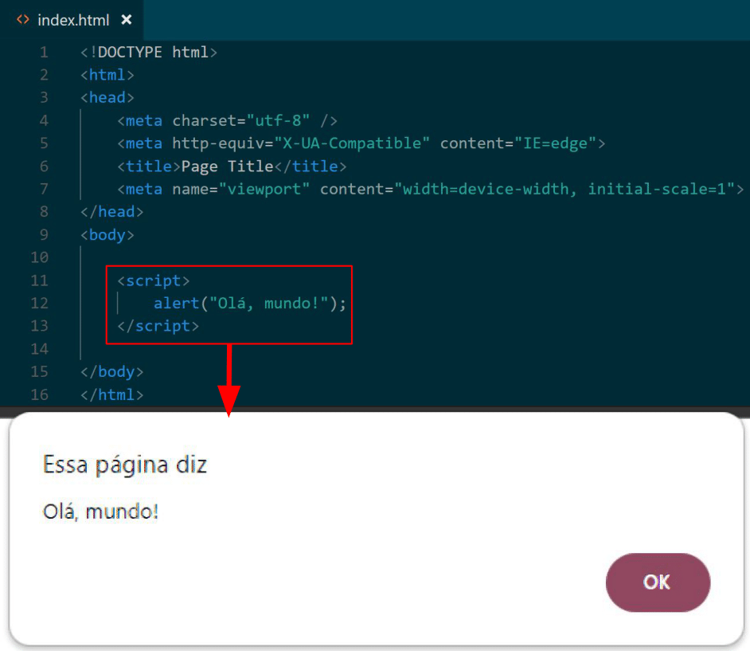
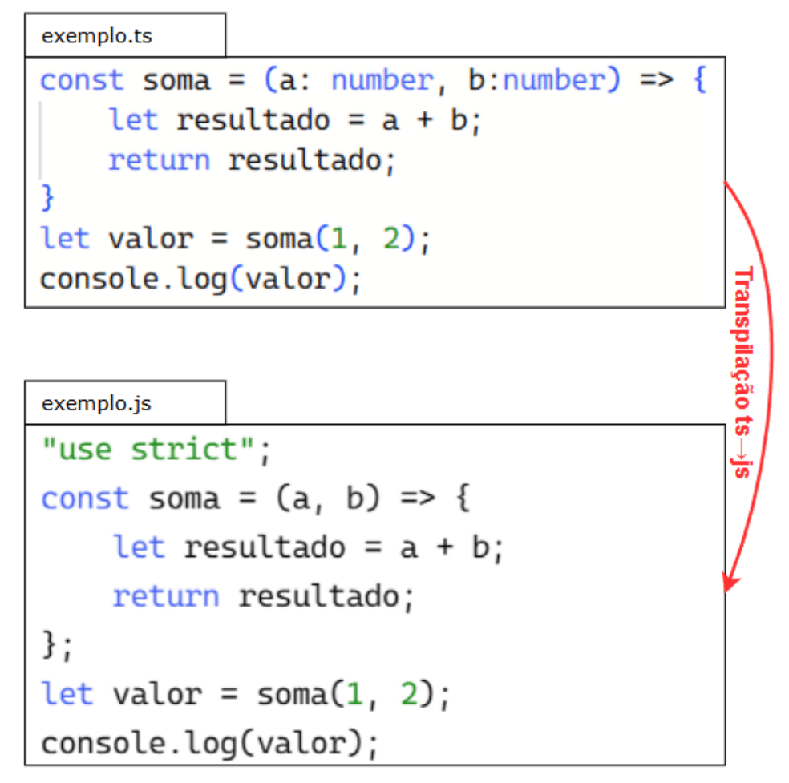

1. JavaScript e TypeScript
Este capítulo apresenta uma introdução prática e objetiva às linguagens
- Visão Geral: Aqui, você conhecerá os fundamentos de JavaScript e TypeScript, suas diferenças e vantagens. Esses conceitos são abordados nas Seções 1 e 2.
- Sintaxe e Funcionalidades: Esta parte cobre a estrutura das
linguagens de forma prática. Serão abordados tipos de dados, variáveis, operações matemáticas e
manipulação de
strings
(Seções 3 a 7). Em seguida, exploramos estruturas
essenciais como condicionais (
if/else,switch/case) e laços de repetição (for,while) de forma integrada (Seções 8 e 9). Também veremos funções e suas variações, como arrow functions (Seção 10), além do tratamento de exceções e a programação assíncrona com callbacks, Promises easync/await(Seções 11, 12 e 13). Para organização de dados, abordamos arrays e coleções chaveadas (Seções 14 e 15). Por fim, introduzimos classes, herança e interfaces (Seções 16 e 17). - Aplicação Prática: Para consolidar os conceitos, a Seção 18 apresenta um exemplo completo: a implementação de um jogo Flappy Bird utilizando JavaScript e TypeScript.
1.1. Visão Geral sobre JavaScript
O JavaScript é uma linguagem de programação de alto nível e multiparadigma, suportando programação orientada a objetos, funcional e imperativa incluído orientada a objetos, amplamente utilizada no desenvolvimento de aplicações Web. Originalmente criada para fornecer interatividade aos sites, permitindo a manipulação dinâmica do conteúdo da página e a resposta a eventos do usuário, o JavaScript evoluiu ao longo dos anos e se tornou uma linguagem versátil, com suporte a programação assíncrona e desenvolvimento tanto no cliente quanto no servidor.
A história do JavaScript remonta à década de 1990, quando foi criado por Brendan Eich na Netscape Communications Corporation. Inicialmente chamada de LiveScript, a linguagem foi renomeada para JavaScript para capitalizar a popularidade da linguagem Java na época. Em 1997, a Ecma International lançou a especificação ECMAScript, que é a padronização oficial da linguagem. Desde então, várias versões do ECMAScript foram lançadas, introduzindo melhorias e novos recursos para o JavaScript.
O JavaScript é uma linguagem interpretada, o que significa que o código fonte é executado diretamente por um interpretador em tempo de execução, sem a necessidade de compilação prévia. Os navegadores modernos incorporam motores JavaScript, como o V8, SpiderMonkey e JavaScriptCore, para executar o código JavaScript. Na Figura 1 é possível visualizar um exemplo de um código JavaScript implementado a uma página HTML sendo interpretado por um navegador Web.

Uma característica importante do
JavaScript
é a tipagem dinâmica, o
que dispensa a necessidade de declaração explícita de tipos de variáveis. Variáveis em
JavaScript
podem armazenar valores de diferentes tipos, como números, strings,
objetos e funções. Além disso, o
JavaScript
suporta programação assíncrona por meio
de recursos como chamadas de retorno (callbacks),
Promises
e a
adição mais recente do async/await, que permitem a execução de tarefas demoradas
em segundo plano, sem
bloquear a execução do programa.
O JavaScript desempenha um papel fundamental no desenvolvimento Web e se tornou uma linguagem padrão para páginas da Web. Sua importância reside no fato de que o JavaScript é responsável por tornar as páginas Web dinâmicas, interativas e funcionais. Assim, é possível adicionar recursos como validação de formulários, animações, manipulação do DOM (Modelo de Objeto de Documento) e interações em tempo real com o usuário.
Além do desenvolvimento front-end de sites e aplicações Web, o JavaScript é amplamente adotado em frameworks e bibliotecas populares, como React.js, Angular.js, Vue.js e Node.js. Esses frameworks possibilitam a construção de aplicativos Web complexos, tanto no lado do cliente quanto no servidor, além de fornecerem uma estrutura robusta para o desenvolvimento de interfaces de usuário sofisticadas e responsivas. O JavaScript também é amplamente utilizado no desenvolvimento de jogos, aplicativos móveis híbridos e até no desenvolvimento de servidores com o Node.js.
O Node.js é uma versão do JavaScript que se destaca por sua aplicação no desenvolvimento back-end. Enquanto o JavaScript é amplamente reconhecido como a linguagem de programação padrão para páginas Web, responsável por torná-las dinâmicas e interativas, o Node.js estende o uso dessa linguagem para o lado do servidor. Essa expansão permitiu que os desenvolvedores utilizassem o JavaScript em todas as camadas de uma aplicação, unificando a linguagem e facilitando o compartilhamento de código entre o front-end e o back-end.
1.1.1 Tipagem Dinâmica
Uma das características mais distintivas do JavaScript é a tipagem dinâmica. Diferentemente de linguagens com tipagem estática, como C++ ou Java, em que os tipos de variáveis devem ser declarados explicitamente, o JavaScript permite que as variáveis armazenem valores de diferentes tipos em momentos distintos durante a execução do programa. Essa flexibilidade da tipagem dinâmica pode ser uma vantagem, pois simplifica o desenvolvimento, permitindo que variáveis sejam reutilizadas para diferentes propósitos sem a necessidade de redeclaração ou conversões explícitas de tipo. Por exemplo, uma variável pode armazenar um número em um momento e, em seguida, armazenar uma string ou objeto posteriormente.
Em contrapartida, a tipagem dinâmica também pode apresentar desafios, especialmente em projetos grandes e complexos, nos quais o controle estrito dos tipos pode ser desejado para evitar erros. É importante ter cuidado ao lidar com tipos em JavaScript para garantir que as operações sejam realizadas corretamente e que os valores sejam coerentes com o esperado. E como solução a esta problemática com a linguagem, surgiu o TypeScript.
1.1.2 Programação Assíncrona
Outra característica importante do JavaScript é o suporte à programação assíncrona. Isso permite que o código seja executado de forma não sequencial, em que tarefas demoradas ou bloqueantes podem ser executadas em segundo plano, enquanto outras operações continuam. Antes dos recursos assíncronos do JavaScript, as chamadas de função que envolviam operações demoradas, como solicitações de rede, poderiam bloquear a execução do programa até que a operação fosse concluída. Isso poderia levar a uma experiência ruim para o usuário, pois a interface do usuário poderia parecer congelada até que a operação fosse concluída.
No entanto, com a introdução de recursos como chamadas de retorno (callbacks), Promises e async/await, o JavaScript oferece mecanismos poderosos para lidar com operações assíncronas. As chamadas de retorno permitem que uma função seja passada como argumento para outra função, a ser executada quando uma determinada operação for concluída. As Promises são objetos que representam o resultado futuro de uma operação assíncrona, permitindo que o código se organize de forma mais legível e evitando a ocorrência de " callback hell " (aninhamento excessivo de chamadas de retorno). O async/await é uma adição mais recente à linguagem que simplifica ainda mais a programação assíncrona, permitindo que o código assíncrono seja escrito de forma mais similar à programação síncrona, facilitando a compreensão e a manutenção do código.
Esses recursos de programação assíncrona são especialmente úteis no contexto de aplicações Web, já que muitas vezes é necessário realizar operações demoradas, como fazer solicitações a APIs externas, buscar dados em bancos de dados ou processar grandes volumes de informações. O JavaScript oferece ferramentas poderosas para lidar com essas situações, permitindo que as aplicações sejam responsivas e mantenham uma boa experiência para o usuário.
1.1.3 Ecossistema do JavaScript
O JavaScript possui um ecossistema vibrante, com uma grande quantidade de bibliotecas, frameworks e ferramentas disponíveis para facilitar o desenvolvimento de aplicações Web. Além disso, o JavaScript é suportado em todos os principais navegadores modernos, tornando-se uma linguagem universalmente aceita para o desenvolvimento front-end. Existem muitos frameworks populares construídos com JavaScript, que fornecem estruturas e padrões para o desenvolvimento Web. Alguns dos mais conhecidos~são:
- React.js (https://react.dev): Um framework JavaScript mantido pelo Facebook, que é amplamente utilizado para construir interfaces de usuário interativas. O React.js utiliza um modelo de componentes reutilizáveis, que simplifica o desenvolvimento e a manutenção de interfaces complexas.
- Angular.js (https://angular.io): Um framework JavaScript mantido pelo Google, que permite a criação de aplicações Web escaláveis e de alta performance. O Angular.js utiliza o conceito de data binding, em que as alterações nos dados são automaticamente refletidas na interface do usuário, simplificando a sincronização entre a lógica e a apresentação.
- Vue.js (https://vuejs.org): Um framework JavaScript progressivo e de fácil aprendizado, que permite a construção de interfaces de usuário interativas e reativas. O Vue.js oferece uma sintaxe intuitiva e flexível, permitindo que os desenvolvedores criem componentes reutilizáveis e construam aplicações de forma incremental.
- Node.js (https://nodejs.org/en): Uma plataforma de tempo de execução JavaScript construída sobre o mecanismo V8 do Google Chrome. O Node.js permite a execução de código JavaScript no lado do servidor, o que abre um mundo de possibilidades para o desenvolvimento Web. Com o Node.js, é possível criar servidores Web, APIs RESTful, microsserviços e muito mais.
Esses são apenas alguns exemplos do vasto ecossistema JavaScript. Existem inúmeras outras bibliotecas e ferramentas disponíveis, cada uma com suas características e casos de uso específicos. O JavaScript continua evoluindo rapidamente, com novas versões do ECMAScript sendo lançadas regularmente, trazendo melhorias e recursos adicionais para a linguagem.
1.2. Visão Geral sobre TypeScript
O TypeScript é uma linguagem de programação desenvolvida pela Microsoft que se baseia no JavaScript padrão, adicionando recursos de tipagem estática e outros recursos avançados. Foi projetada para solucionar algumas das limitações do JavaScript, oferecendo aos desenvolvedores uma experiência de desenvolvimento mais robusta e segura. Assim como o JavaScript, o TypeScript são essenciais para desenvolvimento Web, cada um com vantagens únicas para diferentes cenários, tanto no front-end quanto no back-end. Ele compartilha a mesma sintaxe básica e estrutura de programação do JavaScript, mas introduz a adição de tipos estáticos opcionais. Essa adição permite que os desenvolvedores especifiquem o tipo de cada variável, parâmetro e retorno de função, trazendo benefícios em termos de detecção de erros em tempo de compilação e ferramentas de autocompletar mais poderosas.
O TypeScript foi lançado como um projeto de código aberto em 2012, com base na especificação ECMAScript, a mesma base do JavaScript. Ele transpila para JavaScript, o que significa que o código escrito em TypeScript é traduzido para JavaScript para ser executado em qualquer ambiente compatível com JavaScript. O TypeScript é amplamente adotado em projetos de grande escala, nos quais a manutenção e a escalabilidade são essenciais. Frameworks populares, como Angular.js, adotam o TypeScript como sua linguagem principal, aproveitando os recursos adicionais fornecidos pela linguagem para facilitar o desenvolvimento de aplicativos Web robustos.
A Figura 2 ilustra um exemplo de transpilação de um código
TypeScript
em um código
JavaScript. No código do arquivo
exemplo.ts é possível observar a declaração de uma função somar, que especifica os tipos dos parâmetros da função, sendo eles dois valores
do tipo number, e a função, por sua vez, retorna a soma desses valores. Já no
código do arquivo exemplo.js, resultado da traspilaço do
TypeScript, apresenta o mesmo código, contudo, sem os tipos estáticos definidos.
Além disso, o compilador acrescenta na primeira linha de código o comando "use strict", que impede que variáveis sejam usadas sem antes serem declaradas em
JavaScript.

Uma das principais vantagens do TypeScript é a detecção de erros em tempo de transpilação. Ao adicionar tipos estáticos ao código, o compilador do TypeScript pode identificar erros, como atribuição incorreta de tipos, chamadas de função inválidas e propriedades inexistentes. Essa verificação estática ajuda a reduzir erros comuns e permite que os desenvolvedores identifiquem problemas antes mesmo de executar o código. Além da tipagem estática, o TypeScript oferece recursos avançados, como interfaces, herança de classe, classes abstratas, módulos e uma variedade de recursos adicionais para facilitar o desenvolvimento de aplicativos complexos. Ele também suporta as últimas atualizações do ECMAScript, permitindo que os desenvolvedores utilizem as funcionalidades mais recentes do JavaScript.
1.2.1 Benefícios da Tipagem Estática
A adição de tipos estáticos ao JavaScript no TypeScript traz diversos benefícios para o desenvolvimento de software. Alguns dos principais benefícios incluem:
- Detecção de erros em tempo de transpilação: Com a tipagem estática, o compilador do TypeScript é capaz de identificar erros no código antes mesmo de ser executado. Isso ajuda a reduzir erros comuns, como atribuições incorretas de tipos e chamadas de função inválidas, proporcionando um código mais confiável e menos propenso a erros em tempo de execução.
- Melhor autocompletar e recursos de IDE: A especificação dos tipos no TypeScript permite que as IDEs forneçam recursos de autocompletar mais poderosos e informações sobre os tipos esperados. Isso aumenta a produtividade do desenvolvedor, reduzindo o tempo gasto em pesquisas de documentação e evitando erros de digitação.
- Refatoração segura: Com a tipagem estática, é possível realizar refatorações de código com mais segurança. O compilador pode identificar e alertar sobre alterações que podem afetar outras partes do código, facilitando a manutenção e a evolução do projeto.
- Documentação mais clara: A especificação dos tipos no código fonte torna a documentação do código mais clara e autoexplicativa. Os tipos fornecem informações valiosas sobre os parâmetros e retornos das funções, tornando o código mais legível e compreensível para outros desenvolvedores.
- Colaboração facilitada: A tipagem estática ajuda na colaboração entre membros da equipe, especialmente em projetos grandes. Com os tipos definidos explicitamente, fica mais fácil entender as intenções do código e evitar conflitos entre diferentes partes do projeto.
- Melhor escalabilidade: O TypeScript facilita o desenvolvimento de projetos de grande escala de maneira mais eficiente. Com a tipagem estática, é possível ter uma visão mais clara das dependências e interações entre os diferentes componentes do sistema, facilitando a manutenção e a evolução do código à medida que o projeto cresce.
Desde 2012, o TypeScript tem sido amplamente adotado por grandes corporações devido à sua tipagem estática e compatibilidade com JavaScript, manutenível e escalável. Esses benefícios são alcançados graças às características da linguagem, como a tipagem estática e os recursos de orientação a objetos, que permitem aos desenvolvedores detectar erros de forma antecipada, melhorar a clareza e legibilidade do código e facilitar sua manutenção ao longo do tempo. Além disso, o TypeScript oferece suporte a ferramentas de desenvolvimento poderosas, como autocompletar e refatoração, que ajudam a acelerar o processo de desenvolvimento e garantir uma base de código mais robusta. Com essas vantagens, o TypeScript se tornou a escolha preferida para muitas equipes de desenvolvimento que buscam construir sistemas mais confiáveis e escaláveis.
1.2.2 Ecossistema TypeScript
Assim como o JavaScript, o TypeScript também possui um ecossistema ativo e diversificado, com uma ampla gama de bibliotecas e frameworks disponíveis para facilitar o desenvolvimento de aplicações Web. Muitas bibliotecas e frameworks populares do JavaScript são compatíveis com o TypeScript, permitindo que os desenvolvedores tirem proveito dos recursos adicionais de tipagem estática. Além disso, o TypeScript é suportado por uma série de ferramentas de desenvolvimento, como IDEs (Ambientes de Desenvolvimento Integrado) e editores de código, que fornecem recursos avançados para ajudar os desenvolvedores a escrever, depurar e refatorar código TypeScript. Algumas das ferramentas populares para desenvolvimento TypeScript incluem:
- Visual Studio Code (https://code.visualstudio.com): Um editor de código gratuito e de código aberto desenvolvido pela Microsoft, com suporte nativo ao TypeScript. O Visual Studio Code oferece recursos avançados, como autocompletar, depuração integrada, integração com controle de versão e extensibilidade por meio de plugins.
- WebStorm (https://www.jetbrains.com/pt-br/webstorm): Um IDE poderoso para o desenvolvimento Web, que oferece suporte ao TypeScript e a outras tecnologias Web. O WebStorm fornece recursos avançados de refatoração, depuração e análise de código, ajudando os desenvolvedores a escreverem código TypeScript de forma eficiente.
- TypeScript Playground (https://www.typescriptlang.org/play): Uma ferramenta online fornecida pela equipe do TypeScript, que permite experimentar e testar código TypeScript diretamente no navegador. O TypeScript Playground oferece recursos de autocompletar, verificação de erros em tempo real e visualização do JavaScript gerado pelo código TypeScript.
- Deno (https://deno.com/runtime): Um runtime JavaScript / TypeScript seguro e moderno, construído com base no mecanismo V8 do Google Chrome. O Deno permite executar código TypeScript diretamente, sem a necessidade de compilação prévia, e oferece recursos avançados, como módulos nativos, controle de acesso a recursos do sistema e suporte a importação de módulos diretamente do navegador.
Esses são apenas alguns exemplos do vasto ecossistema TypeScript. Existem inúmeras outras bibliotecas e ferramentas disponíveis, cada uma com suas características e casos de uso específicos. O TypeScript continua evoluindo rapidamente, com novas versões sendo lançadas regularmente, trazendo melhorias e recursos adicionais para a linguagem.
1.2.3 Instalando e Usando TypeScript
Para usufruir da tipagem estática e outros recursos avançados do
TypeScript
no desenvolvimento do projeto é necessário instalá-lo, utilizando o npm (Node Package Manager), que é o gerenciador de pacotes
do Node.js. Para usar o npm basta baixar e instalar o Node.js, pois ele já vem
incluído.
Para instalar o
TypeScript
usando o npm,
usa-se os comandos apresentados no Código 1. O primeiro comando é utilizado para
instalá-lo globalmente, já o segundo para a adicioná-lo ao projeto como dependência de desenvolvimento.
npm install -g typescript npm install --save-dev typescript
Para iniciar um projeto
TypeScript
usa-se o comando apresentado da
Código 2. Esse comando gera um arquivo chamado tsconfig.json, onde pode-se definir configurações como o diretório de saída, nível
de rigor e suporte a módulos.
npx tsc --init
Para transpilar arquivos
JavaScript
(.js) para
TypeScript
(.ts) utiliza-se o comando mostrado no Código 3,
onde arquivo.ts é o caminho do arquivo. Se o objetivo for transpilar todo o
projeto basta omitir o caminho do arquivo.
npx tsc arquivo.ts
Utilizando Node.js, é possível executar arquivos
TypeScript
sem
precisar transpilá-los manualmente. Basta instalar o ts-node globalmente, ou
localmente no projeto, como já apresentado no Código 1, porém, ao invés de typescript é node-ts. Uma vez feito isso, pode-se usar
o comando do Código 4 para executar o arquivo em
TypeScript.
ts-node arquivo.ts
1.3. Funcionamento
O JavaScript (JS) é uma linguagem interpretada, o que significa que os programas codificados nessa linguagem são executados por um interpretador em tempo de execução, sem a necessidade de compilação prévia para linguagem de máquina. Por outro lado, o TypeScript é uma linguagem compilada, mas não para linguagem de máquina. Os arquivos TypeScript, de extensão ".ts", passam por um processo de compilação para JavaScript, gerando arquivos de extensão ".js", derivados dos arquivos TypeScript. Somente então esses arquivos JavaScript podem ser executados.
O TypeScript (TS) utiliza um compilador (tsc) para transformar o código TypeScript em um código JavaScript equivalente. Durante o processo de compilação, o compilador verifica a sintaxe do código TS, realiza análise estática de tipos e converte o código em JavaScript válido. Esse código JS resultante pode ser executado em qualquer ambiente compatível com JavaScript, como navegadores Web, servidores Node.js e outros ambientes de tempo de execução.
1.4. Tipos de Dados e Variáveis
Os tipos de dados referem-se a que tipo de informações uma linguagem consegue operar primitivamente, ou seja, o que é representável computacionalmente no contexto da linguagem de programação . Já as variáveis, são espaços de memória alocados para armazenar esses tipos de dados. É por meio das variáveis que se manipulam os dados na programação.
1.4.1 Declaração
Para o programa reconhecer uma variável, precisa-se declará-la, ou seja, dar o comando de alocar um espaço da memória do computador e nomeá-lo para que se possa armazenar e consultar dados nesse espaço de memória no decorrer do programa. O nome dado a esse trecho de memória é o nome da variável, também chamado de identificador.
Para declarar uma variável em
JavaScript
e
TypeScript
é bem simples, como mostra o Código 5. Observa-se
que o comando inicia com a palavra reservada let, que indica a declaração de uma
variável, e logo em seguida, consta o nome da variável (não pode conter caracteres especiais). No caso do
TS, ainda em sequência, têm-se a opção de inserir dois pontos e especificar o tipo de dado da variável
declarada. De forma geral, pode-se substituir "minhaVariavel" por qualquer nome
de variável (contanto que não contenha caracteres especiais ou comece com número) e "number" por qualquer tipo disponível na linguagem.
let minhaVariavel; // Em JavaScript let minhaVariavel: number; // Em TypeScript
1.4.2 Constantes e Variáveis
A distinção entre constantes e variáveis é fundamental na programação. As constantes são valores imutáveis que não sofrem alterações ao longo do programa, fornecendo consistência e confiabilidade ao código. Essas constantes são frequentemente utilizadas para representar informações fixas, como números específicos, configurações ou valores que não devem ser modificados. Por outro lado, as variáveis são utilizadas para armazenar informações que podem ser alteradas durante a execução do programa. Elas permitem a flexibilidade de manipular e atualizar valores à medida que o programa avança. As variáveis são úteis quando se precisa lidar com dados que podem ser modificados, como contadores, resultados de cálculos ou entradas fornecidas pelo usuário. A distinção entre constantes e variáveis permite aos programadores controlar o comportamento do código de acordo com as necessidades do programa, garantindo assim um melhor gerenciamento dos dados e uma maior flexibilidade na manipulação dos valores.
A sintaxe geral para a declaração de constantes é ilustrada no Código
6. No caso do
JavaScript, a declaração simplesmente consiste em utilizar a palavra const seguida pelo
nome da constante. Já no
TypeScript, é
possível também definir o tipo da constante através da notação: "<tipo>",
onde <tipo> representa o tipo de dado que a constante irá armazenar. Essa
adição de tipos é uma das vantagens do
TypeScript, pois traz maior segurança e ajuda
a evitar erros de tipo durante o desenvolvimento.
const <nomeDaConstante> // em JavaScript const <nomeDaConstante>: <tipo> // em TypeScript
Uma outra maneira ainda de se declarar uma variável, como pode-se observar na Código 7 é utilizando a palavra reservada var. A
principal diferença entre o let e o var é que o
var tem escopo de função ou escopo global, é içada (hoisted) para o topo do escopo e permite reatribuição, enquanto o let, usado no Código 5, tem escopo de bloco, não é içada
(hoisted) para o topo do escopo e também permite reatribuição, mas apenas dentro do
mesmo bloco em que foi declarada. A preferência atual é usar let em vez de var na maioria dos casos, pois o escopo
de bloco do let oferece uma melhor granularidade de controle e ajuda a evitar
problemas relacionados ao escopo.
var <nomeDaVariavel> // Em JavaScript var <nomeDaVariavel>: <tipo> // Em TypeScript
1.4.3 Estruturas de Dados
As variáveis em um algoritmo podem assumir diferentes tipos de dados, dependendo do papel que desempenham. O tipo de dados atribuído a uma variável define o conjunto de valores que ela pode armazenar e as operações que podem ser realizadas sobre ela. Por exemplo, ao calcular a área de uma circunferência, é apropriado utilizar uma variável com tipo numérico para armazenar o raio, permitindo realizar operações matemáticas. Por outro lado, ao armazenar o nome de um usuário, é mais adequado utilizar uma variável com tipo textual para lidar com caracteres e strings. Essa seleção cuidadosa dos tipos de dados garante que as variáveis sejam usadas de forma correta e coerente dentro do contexto do algoritmo.
Além disso, nas linguagens de programação, existem os tipos de dados primitivos, que são os tipos mais básicos e fundamentais da linguagem. Esses tipos primitivos servem como base para a definição de outros tipos de dados mais complexos. Em geral, os tipos primitivos incluem inteiros, números de ponto flutuante, caracteres individuais, valores booleanos (verdadeiro/falso) e outros tipos simples. Eles possuem uma representação direta na memória e são processados de forma eficiente pelos sistemas computacionais. Os tipos primitivos fornecem os blocos de construção essenciais para a construção de estruturas de dados mais complexas e o desenvolvimento de algoritmos. Portanto, compreender e utilizar corretamente os tipos de dados primitivos é fundamental para a programação eficiente e eficaz.
Os tipos de dados existentes em
JavaScript
também são válidos em
TypeScript, mas vale lembrar que diferentemente da linguagem
JavaScript,
TypeScript
é uma linguagem fortemente tipada e
possui alguns tipos adicionais, como o any e o never
. Na Tabela 1 é possível
relacionar os tipos e seus significados, como por exemplo: o tipo Boolean
representa um valor lógico verdadeiro ou falso; o tipo Null representa a
ausência intencional de qualquer objeto ou valor; e assim por diante.
| Tipo | Descrição |
|---|---|
Boolean |
Representa um valor lógico verdadeiro ou falso. Pode ser true
(verdadeiro) ou false (falso). |
Null |
Representa a ausência intencional de qualquer objeto ou valor. O null é um valor especial que indica a falta de um valor ou objeto.
|
Undefined |
Representa uma variável que foi declarada, mas não recebeu um valor. Quando uma variável é
declarada, mas não inicializada, ela terá o valor undefined. |
Number |
Representa valores numéricos, como inteiros e números de ponto flutuante. |
BigInt |
Representa valores inteiros maiores do que o limite superior do tipo number. |
String |
Representa uma sequência de caracteres. |
Symbol |
Representa um valor único e imutável que pode ser usado como chave de uma propriedade de objeto. |
Object |
Representa uma coleção de pares de chave/valor. |
Em
JavaScript
e
TypeScript, existem duas
formas de indicar a ausência de valor: null e undefined. Embora eles sejam semelhantes em alguns aspectos, há diferenças
importantes entre eles. O null é um valor atribuído explicitamente a uma
variável para indicar a ausência intencional de qualquer objeto ou valor. Em outras palavras, quando uma
variável é definida como null, ela indica que não há valor ou objeto associado a
ela. Por outro lado, undefined é um valor atribuído automaticamente a uma
variável que foi declarada, mas não recebeu um valor. Em outras palavras, uma variável é definida como undefined quando não foi inicializada com um valor válido.
O tipo any em
TypeScript
é usado quando
não se tem certeza sobre o tipo de uma variável ou quando a variável pode ter diferentes tipos ao longo do
programa. Essencialmente, o tipo any desabilita o sistema de tipos do
TypeScript
para uma variável específica, permitindo que ela aceite qualquer valor.
Isso pode ser útil em situações em que você está migrando código
JavaScript
existente
para o
TypeScript
e ainda não tem informações sobre o tipo adequado. No entanto, o
uso excessivo do tipo any pode anular os benefícios de segurança de tipos que o
TypeScript
oferece.
Por outro lado, antagônico ao tipo any, o tipo never em
TypeScript
representa o conjunto de valores que
nunca ocorre. Isso significa que uma função que retorna never nunca retorna ou
sempre lança uma exceção. Esse tipo é útil em cenários onde você quer garantir que uma função nunca conclua
com sucesso, como funções que lançam erros ou loops infinitos. No
JavaScript, não há
um tipo diretamente equivalente a never. No entanto, você pode alcançar
comportamento semelhante usando exceções ou loops infinitos.
1.5. Números
Os números desempenham um papel fundamental na programação Web, pois são essenciais para executar cálculos, representar quantidades, armazenar informações e controlar o comportamento de aplicativos e sites. Através da manipulação de números, é possível realizar operações matemáticas complexas, como cálculos financeiros, estatísticos e de geometria, além de gerenciar datas e horários. Além disso, os números são cruciais para criar interações dinâmicas e responsivas, permitindo a validação de formulários, a geração de números aleatórios, a animação de elementos e muito mais. A habilidade de manipular números com precisão e eficiência é essencial para desenvolver aplicativos Web que sejam funcionais, confiáveis e capazes de fornecer uma experiência fluida aos usuários. Ambas as linguagens JavaScript (JS) e TypeScript (TS) fornecem recursos poderosos para manipular e trabalhar com números de maneira eficiente.
Números Decimais: JavaScript e
TypeScript
suportam números decimais, representados pelo tipo number. Ambas as linguagens
permitem realizar operações aritméticas com números decimais, como adição, subtração, multiplicação e
divisão. O exemplo no Código 8 mostra as operações de adição, subtração,
multiplicação e divisão entre dois números
a e b, respectivamente, na terceira, quarta, quinta
e sexta linha.
let a = 5.0; let b = 2.5; let sum = a + b; // Resultado: 7.5 let dif = a - b; // Resultado: 2.5 let prod = a * b; // Resultado: 12.5 let div = a / b; // Resultado: 2.0
Números Binários: Enquanto
JavaScript
não
possui um literal específico para números binários, o
TypeScript
introduziu a sintaxe
de literais binários com o prefixo 0b. Isso permite a representação direta de
números binários, como 0b1010 para o número decimal 10, como é possível observar
na primeira linha do Código 9.
Números Octais: Assim como os números binários, o
JavaScript
não possui um literal para números octais. No entanto, o
TypeScript
adicionou suporte para literais octais com o prefixo 0o. Por exemplo, 0o16 representa o número decimal 14,
como mostra a segunda linha do Código 9.
Números Hexadecimais: Ambas as linguagens
JavaScript
e
TypeScript
suportam números hexadecimais através
do uso do prefixo 0x. Na terceira linha do Código 9 é
explanado um exemplo onde 0xFF representa o número decimal 255.
let numBinario = 0b1010; // Numero decimal 10 let numOctal = 0o16; // Numero decimal 14 let numHexadecimal = 0xFF; // Numero decimal 255
Exponenciação/Notação Científica: JavaScript
e
TypeScript
suportam a notação científica para representar números muito grandes ou
muito pequenos. Por exemplo, 1.23e+6 representa o número 1230000 e 1.23e-6 representa o número 0,00000123, como mostra o exemplo na Código 10.
let bigNum = 1.23e+6; // Numero 1230000 let smallNum = 1.23e-6; // Numero 0.00000123
1.5.1 Objeto Number
JavaScript
fornece o objeto Number
embutido, que oferece uma variedade de métodos úteis para trabalhar com números, que também é válido em
TypeScript. Por exemplo, o método toFixed() retorna uma
representação formatada do número com uma quantidade específica de casas decimais. Na Código 11, demonstra-se o uso
do objeto Number para formatar o número 42 em uma string com duas casas
decimais, resultando em "42.00".
let num = 42; let fixedDecimal = num.toFixed(2); // Numero formatado com 2 casas decimais: "42.00"
O uso do objeto Number permite realizar operações mais
avançadas, como conversões de bases numéricas e manipulação precisa de valores numéricos. Ele oferece uma
série de métodos e propriedades, como toString(), que retorna a string do número
em certa base numérica passada como argumento, entre outros, que podem ser observados na Tabela 2, que apresenta alguns dos principais métodos e atributos que podem ser
utilizados com o objeto Number. Esses recursos fornecem funcionalidades
adicionais para a manipulação e formatação de números em
JavaScript
e
TypeScript, permitindo realizar operações mais avançadas e
precisas.
| Método/Atributo | Descrição |
|---|---|
| toExponential() | String do número em notação exponencial. |
| toFixed(n) | String do número com n casas decimais. |
| toPrecision(n) | String do número com a precisão especificada n. |
| toString(n) | String do número na base n. |
| valueOf() | Valor numérico primitivo do objeto Number. |
| MAX_VALUE | O maior número possível da linguagem. |
| MIN_VALUE | O menor número possível da linguagem. |
| POSITIVE_INFINITY | Representa o infinito positivo. |
| NEGATIVE_INFINITY | Representa o infinito negativo. |
| NaN | Representa um valor que não é um número. |
1.5.2 NaN (Not a Number)
Em
JavaScript
e
TypeScript, o valor especial NaN (Not
a Number) é usado para representar um resultado
numérico inválido ou indefinido. Ele é retornado quando ocorre uma operação matemática que não pode produzir
um
resultado numérico válido. O NaN é um valor do tipo número, mas não é igual a
nenhum
número real ou infinito. Ele é considerado um valor falso quando usado em um contexto booleano. Por exemplo,
a
expressão NaN === NaN retorna false, o que indica
que
NaN não é igual a ele mesmo. Alguns exemplos de casos em que o NaN pode ser gerado são:
- Divisão por zero: Quando um número é dividido por zero, o resultado é indefinido e é
representado como
NaN. - Operações matemáticas inválidas: Se uma operação matemática que não faz sentido é
executada, como tentar obter a raiz quadrada de um número negativo, o resultado será
NaN. - Conversões numéricas inválidas: Ao tentar converter uma string que não representa um número
válido em
JavaScript
ou
TypeScript, o resultado será
NaN.
O NaN tem algumas propriedades peculiares quando usado em
cálculos, pois o NaN é contagioso. Qualquer operação aritmética com NaN resultará em NaN, como por exemplo: NaN + 5 ou NaN * 10. Por isso, ao lidar com valores
numéricos em
JavaScript
e
TypeScript, é importante verificar
se um valor é NaN antes de usá-lo. Pode-se usar a função isNaN() para verificar se um valor é ou não NaN. Essa
função retorna true se o valor fornecido for NaN e
false caso contrário.
Embora o comportamento do NaN seja semelhante em
JavaScript
e
TypeScript, o
TypeScript
oferece suporte adicional aos tipos de dados estáticos, o que pode ajudar a evitar erros relacionados ao uso
de NaN em operações matemáticas. Com o
TypeScript, é
possível definir tipos específicos para variáveis e parâmetros de função, o que pode ajudar a identificar
erros de tipo em tempo de compilação e evitar situações em que NaN é usado
incorretamente.
1.6. Strings
As strings desempenham um papel crucial na programação Web, sendo fundamentais para manipular e exibir texto e conteúdo em aplicativos e sites. Elas permitem a representação e armazenamento de informações como nomes, mensagens, endereços e muitos outros dados textuais. Além disso, a manipulação de strings é essencial para realizar operações como concatenação, formatação, busca, substituição e extração de partes específicas do texto. Isso permite criar recursos como formulários interativos, validação de entrada de dados, filtragem e ordenação de listas, geração dinâmica de conteúdo e muito mais. A habilidade de trabalhar com strings de forma eficiente e precisa é essencial para o desenvolvimento de aplicativos Web robustos, funcionais e com uma interface de usuário envolvente e amigável. Ambas as linguagens JavaScript e TypeScript fornecem recursos poderosos para trabalhar com strings.
Declaração de Strings: Em
JavaScript
e
TypeScript, as strings podem ser declaradas utilizando aspas simples (' ') ou aspas
duplas (" "). Ambas as formas são igualmente válidas e produzem a mesma saída. Pode-se escolher usar aspas
simples ou aspas duplas com base em preferências pessoais ou em convenções de estilo de código adotadas em
um projeto específico. O Código 12 apresenta um exemplo onde se declara uma
variável mensagem com o valor `Ola, mundo!', utilizando-se aspas simples, e
outra variável nome com o valor "Maria", declarada com aspas duplas.
let mensagem = 'Ola, mundo!'; let nome = "Maria";
Concatenação de Strings: A concatenação de strings é uma operação
comum ao lidar com texto. Em
JavaScript
e
TypeScript, pode-se
concatenar strings utilizando o operador de adição (+) ou o método concat().
Para exemplificar, no Código 13, declara-se uma variável saudacao com o valor "Ola, " e outras variáveis nome1
e nome2 com os valores "Maria" e "Jose", respectivamente. Em seguida, utiliza-se
o operador de adição (+) para concatenar as strings saudacao e nome1, armazenando o resultado na variável mensagem,
que resultou em "Ola, Maria". Para realizar outra concatenação, foi utilizado o método concat() entre as strings saudacao e nome2, resultando em "Olá, Jose".
let saudacao = "Ola, "; let nome1 = "Maria"; let nome2 = "Jose"; let mensagem1 = saudacao + nome1; // "Ola, Maria" let mensagem2 = saudacao.concat(nome2); // "Ola, Jose"
Acessando Caracteres: Caracteres individuais de uma string podem ser
acessados utilizando a notação de colchetes ([]). Os índices começam em zero, ou seja, o primeiro caractere
tem o índice 0. No exemplo do Código 14, uma variável nome é declarada com o valor "Alice". Em seguida, foi utilizada a notação de
colchetes com o índice zero para acessar o primeiro caractere da string, que é "A", e ainda, foi utilizado o
atributo length da string para pegar seu tamanho e posteriormente subtraído em
uma unidade para indicar o índice do último caractere, que é "e".
let nome = "Alice"; let primeiroCaractere = nome[0]; // "A" let ultimoCaractere = nome[nome.length - 1]; // "e"
Métodos de Manipulação de Strings:
JavaScript
e
TypeScript
fornecem uma variedade de métodos embutidos para manipulação de strings.
o Código 15 ilustra a utilização do método toUpperCase
para transformar todos os caracteres da string "julia" em caracteres maiúsculos.
Alguns dos métodos de manipulação de string em JS e TS mais comuns incluem:
length: Retorna o comprimento da string.toUpperCase(): Converte a string para letras maiúsculas.toLowerCase(): Converte a string para letras minúsculas.substring(startIndex, endIndex): Retorna uma parte da string, começando do índicestartIndexaté o índiceendIndex(não incluído).split(separator): Divide a string em um array de substrings com base no separador especificado.trim(): Remove espaços em branco do início e do final da string.
let nome = "julia"; let nomeMaiusculo = nome.toUpperCase() // "JULIA"
1.7. Operações Básicas
As operações básicas são realizadas pelos operadores nativos da linguagem que são amplamente utilizados, são como comandos atômicos dentro da linguagem. Em JavaScript (JS) e TypeScript (TS), dentre essas operações estão: operadores aritméticos, operadores de atribuição e operadores de comparação.
1.7.1 Atribuição
Atribuição é uma operação que armazena um valor em uma variável. O operador utilizado para essa tarefa em JS e TS é o igual (=). Como mostra o Código 16, há a declaração de uma variável numérica e em seguida é-lhe atribuído o valor 5, na primeira e segunda linha, respectivamente. Também é possível fazer o mesmo processo de declaração e atribuição de uma forma mais sucinta, como é expresso na terceira linha.
let minhaVariavel; minhaVariavel = 5; let minhaOutraVariavel = 5;
A
inicialização
é a primeira operação de atribuição que uma variável
recebe, e é fundamental para garantir que a variável não fique com um valor vazio ou indefinido. No
TypeScript, ao inicializar uma variável com um valor, a linguagem realiza a
inferência de tipo, determinando automaticamente qual será o tipo da variável com
base nessa atribuição. Se uma variável for declarada e receber um valor na mesma linha, o compilador é capaz
de inferir seu tipo, dispensando a necessidade de declarar explicitamente o tipo da variável. No entanto, se
uma variável for declarada sem especificar seu tipo e não receber um valor na mesma linha, seu tipo será
assumido como any no código
TypeScript.
1.7.2 Comentários
Os comentários, no contexto da programação, são trechos do código os quais não interferem no programa, são apenas anotações no decorrer do código. Para iniciar um comentário, tanto em JS como em TS, basta inserir duas barras (//) no código e todo o texto que estiver em sequência na mesma linha será considerado como um comentário. Caso haja a necessidade de escrever um comentário que ocupe mais que uma linha, pode-se iniciá-lo com uma barra e um asterisco (/*) e finalizá-lo com um asterisco e uma barra (*/). Como mostra o exemplo no Código 17, na primeira linha de código há um comando de declaração e inicialização de uma variável, e após esse comando, na mesma linha, um comentário "Comentario em uma linha", e após, nas linhas seguintes, um outro comentário "Este comentario pode tomar varias linhas".
let minhaVariavel = 2; // Comentario em uma linha /* Este comentario pode tomar varias linhas */
A importância dos comentários reside no fato de que eles facilitam a compreensão do código para os desenvolvedores, tanto para o próprio autor quanto para outros que possam trabalhar ou dar manutenção no código no futuro. Comentários bem escritos ajudam a descrever a lógica por trás de uma seção de código, a fornecer contextos importantes e a documentar decisões de design. Os comentários também são úteis para adicionar lembretes, fazer anotações ou desativar temporariamente partes do código durante o desenvolvimento. Além disso, eles podem ajudar na depuração, permitindo que os desenvolvedores expliquem o propósito de certas linhas de código ou identifiquem possíveis problemas. Ao utilizar comentários, é importante seguir algumas boas práticas, o que inclui: manter os comentários atualizados à medida que o código evolui, escrever comentários claros e concisos, evitar comentários óbvios ou redundantes e evitar comentários em excesso que possam poluir o código.
1.7.3 Operações Aritméticas
Algumas operações aritméticas básicas e recorrentemente utilizadas na programação são: adição, subtração, multiplicação, divisão e módulo (resto da divisão). Essas operações são realizadas em JavaScript e TypeScript de maneira semelhante à matemática convencional, e seus resultados podem ser armazenados em variáveis para posterior utilização. É importante mencionar que, assim como na matemática, os parênteses podem ser utilizados para definir a ordem de prioridade das operações.
A Código 18 mostra alguns exemplos de operações aritméticas
básicas, dentre elas: na primeira linha, a adição dos valores 2 e 5, em que o resultado é atribuído à
variável x, que terá o valor 7; na segunda linha, a subtração do valor 5 do
valor 15, em que resultado é atribuído à variável y, que terá o valor 10; na
terceira linha, a multiplicação dos valores 3 e 5, em que o resultado é atribuído à variável z, que terá o valor 15; na quarta linha, a divisão de 15 por 5, em que o resultado
é atribuído à variável w, que terá o valor 3; e na quinta linha, a operação de
resto da divisão, dividindo 7 por 5, em que o resultado é atribuído à variável k, que terá o valor 2.
let x = 2 + 5; // x vale 7 let y = 15 - 5; // y vale 10 let z = 3 * 5; // z vale 15 let w = 15 / 5; // w vale 3 let k = 7 % 5; // k vale 2
Essas operações aritméticas são úteis em uma variedade de cenários de programação, desde cálculos simples até operações mais complexas envolvendo variáveis e expressões. É importante ter em mente a ordem de precedência dos operadores aritméticos, bem como o uso adequado de parênteses quando necessário, para obter os resultados desejados.
1.7.4 Objeto Math
O objeto Math em
JavaScript
e
TypeScript
fornece um conjunto de propriedades e métodos para realizar operações
matemáticas mais avançadas. Essas operações abrangem desde funções trigonométricas e exponenciais até
operações de arredondamento e geração de números aleatórios. Nessa subseção são explanados alguns dos
principais métodos e propriedades disponíveis no objeto Math.
Métodos Trigonométricos: O objeto Math
oferece métodos para calcular funções trigonométricas como seno, cosseno e tangente. Na Código 19, usa-se o método Math.sin() para calcular o
seno de um ângulo. No exemplo, o ângulo é definido como
, que é equivalente a 45 graus em
radianos. O resultado é armazenado na variável sineValue e, em seguida, é
impresso no console. Além do Math.sin(), o objeto Math também oferece os métodos Math.cos() e Math.tan() para calcular o cosseno e a tangente de um ângulo, respectivamente.
// Angulo de 45 graus em radianos const angle = Math.PI / 4; // Calcula o seno do angulo const sineValue = Math.sin(angle);
Métodos Exponenciais: O objeto Math
possui métodos para cálculos exponenciais, como calcular a potência de um número e calcular o logaritmo. Na
Código 20, o método Math.pow() é utilizado para
calcular a potência de um número. No exemplo, eleva-se o número 2 à potência 3, o que resulta em 8. O
resultado é armazenado na variável result e é impresso no console. Além do Math.pow(), o objeto Math também possui o método Math.sqrt() para calcular a raiz quadrada de um número e o método Math.log() para calcular o logaritmo natural.
const base = 2; const exponent = 3; // Calcula 2 elevado a 3, que resulta em 8 const result = Math.pow(base, exponent);
Métodos de Arredondamento: O objeto Math
fornece métodos para arredondar números para cima, para baixo e para o valor inteiro mais próximo. Na Código 21, utiliza-se os métodos Math.ceil(), Math.floor() e Math.round() para arredondar um número.
No exemplo, o número inicial é 4.8. O método Math.ceil() é usado para arredondar
para cima, Math.floor() para arredondar para baixo e Math.round() para arredondar para o valor inteiro mais próximo. Os resultados são
armazenados em variáveis diferentes e são impressos no console.
const number = 4.8; // Arredonda para cima: 5 const roundedUp = Math.ceil(number); // Arredonda para baixo: 4 const roundedDown = Math.floor(number); // Arredonda para o valor inteiro mais proximo: 5 const rounded = Math.round(number);
Métodos de Números Aleatórios: O objeto Math também possui um método para gerar números aleatórios. Na Código 22, foi utilizado o método Math.random() para
gerar um número aleatório entre 0 e 1. O resultado é armazenado na variável random e é impresso no console.
// Gera um numero aleatorio entre 0 e 1 const random = Math.random();
1.7.5 Operações Relacionais
As operações relacionais são utilizadas para realizar comparações entre valores. Essas
operações são comumente usadas em estruturas de condição, como os comandos if e
switch (que serão apresentados posteriormente), para verificar se uma
determinada condição é verdadeira ou falsa. Existem seis operações relacionais em
JavaScript
e
TypeScript
: igual (==), diferente (!=), maior que (>), maior
ou igual (>=), menor que (<) e menor ou igual (<=). Quando se utiliza uma dessas operações para comparar dois valores, o
resultado será um valor booleano (verdadeiro/
true
ou falso/
false).
No Código 23 há alguns exemplos de uso das operações relacionais
entre as variáveis a e b, dentre elas: na terceira
linha, a operação de igualdade (==), que resultará em
false, que é atribuído à
variável x; na quarta linha, a operação de diferença, o resultado será atribuído
à variável y, que terá o valor booleano
true
; na quinta
linha, a operação de maior que, que resultará em
true
e será atribuído à variável
z; na sexta linha, a operação de maior ou igual, que resultará em
true
e será atribuído à variável w; na sétima linha, a
operação de menor que, que resultará em
false
e será atribuído à variável k; e por fim, na oitava linha, a operação de menor
ou igual, atribuída à variável
m, que valerá
false.
const a = 5; const b = 4; const x = a == b; // x = false const y = a != b; // y = true const z = a > b; // z = true const w = a >= b; // w = true const k = a < b; // k = false const m = a <= b; // m = false
Além desses operadores, também existem os operadores estritamente igual, os quais são
definidos sintaticamente como três iguais juntos (===), e o estritamente
diferente, com sintaxe de um ponto de exclamação seguido de dois sinais de igual (!==). Esses operadores diferem dos operadores de igualdade (==) e diferença (!=) por considerarem também os tipos
dos valores sendo comparados. Eles exigem que os valores sejam iguais em valor e tipo para serem
considerados verdadeiros. Esses operadores são úteis quando se deseja garantir que os valores sendo
comparados sejam idênticos em valor e tipo.
É recomendado utilizar os operadores estritamente igual e estritamente diferente sempre que possível, pois eles oferecem uma comparação mais precisa e ajudam a evitar resultados inesperados devido à coerção de tipo. Além disso, é importante notar que, ao realizar comparações em JavaScript e TypeScript, é necessário levar em consideração as regras de coerção de tipo (type coercion) que podem ocorrer durante as operações. Por exemplo, ao comparar um número com uma string, o JavaScript tentará converter a string em um número antes de realizar a comparação.
1.7.6 Entrada e Saída
Os comandos básicos de entrada e saída são utilizados para interagir com o usuário ou com
dispositivos externos, permitindo que o programa receba informações e exiba resultados. Em
JavaScript
e
TypeScript
os comandos de entrada e saída são os
mesmos. Para fazer a leitura de dados do usuário, utiliza-se o comando prompt,
que exibe uma janela de diálogo na qual o usuário pode inserir um valor. Já para exibir informações para o
usuário, se utiliza o comando console.log, que imprime uma mensagem no console
do navegador ou no console do
Node.js. O Código 24 ilustra a
utilização dos comandos, em que na segunda linha é solicitado o nome do usuário com a função prompt e depois imprime no console o nome digitado com o comando console.log.
// solicita uma entrada do usuario
let nome = prompt("Digite seu nome:");
// imprime no console a entrada do usuario
console.log(nome);
Além do comando console.log que imprime mensagens no console,
existe também o comando alert, que exibe uma janela de alerta no navegador com
uma mensagem para o usuário, como mostrado na Figura 1. O alert é um comando de saída muito utilizado para exibir informações importantes ou
notificações para o usuário. Esse comando é particularmente útil em contextos onde é necessário chamar a
atenção do usuário para alguma informação importante, como validações de formulários, confirmações de ações
ou exibição de erros. No entanto, é importante usar o alert com moderação, pois
janelas de alerta excessivas podem ser intrusivas e perturbar a experiência do usuário.
Em
JavaScript
e
TypeScript, o uso do alert é semelhante ao console.log. a Código 25, baseado no Código 24, ilustra o uso do alert para exibir o nome
digitado pelo usuário em uma janela de alerta. Nesse
exemplo, após solicitar o nome do usuário com o comando prompt, o comando alert é utilizado para exibir o nome em uma janela de alerta. Assim, o usuário
verá o valor digitado no alerta do navegador.
// solicita uma entrada do usuario
let nome = prompt("Digite seu nome:");
// exibe o nome em uma janela de alerta
alert(nome);
1.8. Condicionais
As condicionais são estruturas de controle que permitem que o programa execute diferentes
blocos de código com base em condições específicas. Elas são amplamente utilizadas em
JavaScript
e
TypeScript
para controlar o fluxo do programa
com base em valores e expressões. As condicionais mais comuns nessas linguagens são if/else, mas também existe a estrutura switch/case que possibilita, também, realizar o
controle de fluxo do código para diferentes valores de uma variável.
1.8.1 if/else
O comando if é usado para testar uma condição e executar um
bloco de código caso a condição seja verdadeira. O Código 26 exemplifica a
utilização da estrutura, onde o programa verifica se a variável idade é
maior ou igual a 18. Se essa condição for verdadeira, o bloco de código dentro do if é executado e exibe a mensagem "Voce eh maior de idade" no console.
if (idade >= 18) {
console.log("Voce eh maior de idade");
}
O comando else é usado em conjunto com o if e permite executar um bloco de código caso a condição no if seja falsa. Como é possível observar no Código 27,
se a condição no if for falsa, o bloco de código dentro do else é executado e exibe a mensagem "Voce eh menor de idade" no console.
if (idade >= 18) {
console.log("Voce eh maior de idade");
} else {
console.log("Voce eh menor de idade");
}
A estrutura else if é usada para testar condições
adicionais, caso a condição no if seja falsa. No Código
28, se a condição no if for falsa, o programa testa a condição no
else if e, se essa condição for verdadeira, o bloco de código correspondente
é executado e exibe a mensagem "Voce tem idade suficiente para dirigir", caso contrário, o bloco de
código no else é executado e exibe a mensagem "Voce eh menor de idade".
if (idade >= 18) {
console.log("Voce eh maior de idade.");
} else if (idade >= 16) {
console.log("Voce tem idade suficiente para dirigir.");
} else {
console.log("Voce eh menor de idade.");
}
1.8.2 switch/case
A estrutura switch/case é útil quando há várias
condições a serem testadas e se quer evitar usar várias estruturas if/else.
O comando switch inicia a estrutura,
seguido pela variável que será testada nos diferentes casos. Como é possível observar na Código 29, o programa testa a variável diaDaSemana
e executa o bloco de código correspondente a cada caso. Se o
valor for "Sabado" ou "Domingo", a mensagem "Hoje eh fim de semana" será exibida no console. Caso
contrário, o bloco de código no caso default é executado e exibe a
mensagem "Hoje eh dia de trabalho".
switch (diaDaSemana) {
case "Sabado":
case "Domingo":
console.log("Hoje eh fim de semana");
break;
default:
console.log("Hoje eh dia de trabalho");
break;
}
O comando break é uma instrução utilizada em JavaScript
e TypeScript para interromper a execução de um laço de repetição ou de um bloco de código dentro de
uma estrutura condicional. Quando o comando break é executado, o
controle do programa é transferido imediatamente para fora do laço ou bloco de código, ignorando as
instruções restantes. É importante notar que cada bloco de código dentro de case
deve terminar com o comando break. Isso
impede que o programa execute os casos seguintes, mesmo que a condição seja verdadeira.
1.9. Laços de Repetição
Os laços de repetição são estruturas que permitem que o programa execute um bloco
de código várias vezes, com base em uma condição específica. Eles são amplamente utilizados em
JavaScript
e
TypeScript
para automatizar tarefas
repetitivas e percorrer listas de elementos. Existem dois tipos principais de laços de repetição
nessas linguagens: for e while. Cada um tem
sua utilidade, dependendo da situação.
1.9.1 for
O laço for é frequentemente usado quando se conhece o
número exato de vezes que se deseja repetir o bloco de código. Ele possui três partes: a
inicialização, a condição e o incremento. A inicialização é onde a variável do laço é definida e
inicializada. A condição é a expressão que deve ser verdadeira para continuar a execução do bloco de
código. O incremento define como a variável do laço é atualizada a cada iteração.
for (let i = 0; i < 10; i++) {
console.log(i);
}
No Código 30, o programa executa o bloco de código dentro
do laço de repetição dez vezes. Ele exibe os números de 0 a 9 no console, pois o que acontece é o
seguinte: na primeira repetição, o valor de i assume o valor da sua
inicialização "let i = 0", e executa o bloco de código dentro do loop;
após finalizar a execução do bloco, o incremento "i++" é realizado, e
i recebe seu valor anterior somado de um; depois do incremente a
verificação da condição "i < 10" é realizada e, se for verdadeira, o
bloco de código do for é repetido, caso não, o
loop
termina. Esse processo de incremento e verificação de condição é
realizado em toda iteração.
1.9.2 while
O laço while é comumente usado quando não se sabe
antecipadamente quantas vezes é necessário repetir o bloco de código. Ele repete o bloco de código
enquanto a condição especificada for verdadeira. Como mostra o Código 31, o
programa executa o bloco de código dentro do laço de repetição enquanto a variável i for menor que 10. Ele exibe os números de 0 a 9 no console,
incrementando a variável i a cada iteração.
let i = 0;
while (i < 10) {
console.log(i);
i++;
}
É importante garantir que a condição do laço de repetição eventualmente se torne falsa, caso contrário, o laço será executado infinitamente, causando um loop infinito no programa. Portanto, é necessário cuidado ao definir a condição para evitar esse problema.
1.10. Funções
Funções são blocos de código que podem ser definidos em um programa para realizar uma tarefa específica. Em TypeScript, as funções podem ser definidas e usadas de maneira semelhante ao JavaScript, mas com a adição de tipos de dados estáticos. Isso torna as funções em TypeScript mais robustas em termos de verificação de tipos e fornecem uma maneira mais clara de entender os tipos de entrada e saída esperados.
Declaração e Execução de Funções: Para se declarar uma
função usa-se a palavra-chave function, seguida do nome da função, uma
lista de parâmetros entre parênteses e o corpo da função dentre chaves, como mostra a Código 32. No caso do
TypeScript
pode-se definir
ainda o tipo de dado do retorno da função, como elucida o exemplo do Código
33. Já para executar uma função declarada, basta chamar a função pelo seu nome e passar os
devidos parâmetros, caso necessário, como mostra a quarta linha de ambos os exemplos em JS e TS.
function saudacao() {
console.log("Ola, mundo!");
}
saudacao(); // Log: "Ola, mundo!"
function saudacao(): void {
console.log("Ola, mundo!");
}
saudacao(); // Log: "Ola, mundo!"
Parâmetros da Função: Ao declarar uma função, pode-se
especificar seus parâmetros. Na linguagem
TypeScript
é possível ainda
especificar os tipos dos parâmetros, ajudando a melhorar a verificação de tipos. No exemplos da Código 34 e Código 35, pode-se observar a
especificação de duas variáveis parâmetro a e b,
que pelo contexto, espera-se que sejam do tipo numérico. Ou seja, ao
chamar a função somar, deve-se passar dois valores numéricos para que a
função use esses valores para executar.
function somar(a, b): void {
console.log(a + b);
}
function somar(a: number, b: number): void {
console.log(a + b);
}
O exemplo do Código 36 mostra alguns casos de execução das
funções declaradas no Código 34 e Código 35 em JS
e TS. Pode-se observar a execução correta das somas, de 3 mais 5 que resulta em 8 e da adição de -10
a 10, que resulta em zero. Contudo, as diferenças na utilização das linguagens
JavaScript
e
TypeScript
começam a surgir mais
fortemente a partir deste ponto, pois, caso sejam passados parâmetros de tipos que não sejam
numéricos para a função somar, o verificador de tipos do
TypeScript
alertará sobre a inconsistência no código, o que não ocorre em
JavaScript.
somar(3, 5); // Resultado em JS e TS: 8
somar(10, -10); // Resultado em JS e TS: 0
somar("JS", "TS"); // Resultado em JS: "JSTS"
/* Resultado em TS: Error: Argument of type 'string'
is not assignable to parameter of type 'number'. */
Parâmetros Opcionais: Em
TypeScript
é
possível também declarar uma função com parâmetro opcional, o que significa que ele pode ser passado
ou não para a função. Para isso, usa-se o operador interrogação (?) após
o nome do parâmetro, como evidencia o exemplo no Código 37. Na nona linha
são passados os três parâmetros da função e a soma de 3 mais 1 mais 4 ocorre e é mostrada o
resultado 8 no console. Já na décima linha somente dois parâmetros, 5 e 2, são passados para a
função somar, e a função executa sem erros mostrando o valor 7 no
console, pois o terceiro parâmetro é opcional.
function somar(a:number, b:number, c?:number):void{
if (c){
console.log(a+b+c);
}
else{
console.log(a+b);
}
}
somar(3, 1, 4); // Log: 8
somar(5, 2); // Log: 7
Valores Padrão de Parâmetros: Ainda na declaração das funções, é possível definir valores padrões para os parâmetros das funções nas linguagens JS e TS. Os parâmetros assumem os valores padrão caso, na chamada de execução da função, eles não sejam especificados. Isso viabiliza uma maneira de tornar os parâmetros opcionais. O Código 38 ilustra essa ideia, onde na quarta linha os dois parâmetros são informados, 1 e 2, resultando em 3. Diferentemente, na quinta linha somente um dos parâmetros é informado e a função executa normalmente alocando o valor zero (valor padrão) ao segundo parâmetro. Já na sexta linha nenhum parâmetro é informado e todos os parâmetros, por padrão, recebem o valor zero, fazendo a soma resultar em zero.
function somar(a = 0, b = 0){
console.log(a+b+c);
}
somar(1, 2); // Log: 3
somar(1); // Log: 1
somar(); // Log: 0
Retornos da Função: O retorno de uma função é o valor que a
finalização de sua execução assume. Em
TypeScript
é possível especificar o
tipo de retorno de uma função usando a notação de dois pontos (:) seguido do tipo de dado desejado.
Se a função não retornar nenhum valor, pode-se usar o tipo void, como mostrado nos exemplos
anteriores. Tomando como base ainda o exemplo do Código 38, que ao rodar a
função somar com diferentes parâmetros, o resultado da soma dos
parâmetros é mostrado na tela. Contudo, a função não tem um retorno, o que pode ser evidenciado no
exemplo do Código 39. Nota-se então que a função somar
mostrou o resultado, mas esse valor só existe dentro da execução da
função e não pode ser resgatado externamente a ela. O retorno desempenha esse papel com o comando
return, como mostra o exemplo do Código 40.
const a = somar(3, 5); // Log: 8 console.log(a); // Log: undefined
function somar(a = 0, b = 0){
return a+b;
}
somar(3, 5); // nada aparece na tela
const x = somar(3, 5);
console.log(x); // Log: 8
1.10.1 Arrow Function
As
arrow functions, ou funções de seta, tem uma sintaxe mais
curta e concisa para criar funções em JavaScript e TypeScript. Ao invés de escrever a palavra
function e o bloco de código da função, pode-se simplesmente usar a seta (=>) após os
parâmetros da função para definir o bloco de código. Essa sintaxe simplificada traz benefícios em
termos de legibilidade e escrita de código mais conciso. Como apresentado no Código
41, há uma função de soma declarada como uma
arrow function. A função recebe dois parâmetros opcionais, 'a' e 'b', e
exibe a soma dos dois valores no console. O uso da
arrow function
torna a
declaração da função mais compacta e clara, permitindo que o código seja lido e compreendido de
forma mais eficiente.
// Arrow function
const soma = (a = 0, b = 0) => {
console.log(a + b);
}
soma(1, 2); // Log: 3
Declarar arrow functions como const é uma prática
recomendada. Ao atribuir uma arrow function a uma constante, garante-se que a referência à função
não será reatribuída a outro valor. Isso ajuda a evitar erros acidentais, pois impede que a função
seja inadvertidamente substituída por outro valor. Além disso, utilizar const
para funções arrow ajuda a transmitir a intenção de que a função é
imutável e não deve ser modificada posteriormente.
1.11. Tratamento de Exceções
O tratamento de exceções desempenha um papel crucial na robustez e na
confiabilidade do software. Ele evita que erros não tratados interrompam abruptamente a execução do
programa, garantindo que o código seja capaz de lidar com falhas e tomar ações apropriadas. Além
disso, ao capturar e tratar exceções, é possível fornecer mensagens de erro significativas e
informativas, facilitando a depuração e a identificação de problemas. O tratamento de exceções pode
ser realizado com os blocos try, catch e
continue em linguagens de programação como
JavaScript
e
TypeScript. Essa abordagem permite
capturar exceções, tratar erros de forma controlada e continuar a execução do programa mesmo após um
erro.
O bloco try é usado para envolver o código que pode
gerar exceções. Se uma exceção ocorrer dentro desse bloco, o fluxo de execução é imediatamente
desviado para o bloco catch. Isso permite que você capture a exceção e
forneça um tratamento adequado. O bloco catch contém o código que será
executado quando uma exceção é lançada no bloco try. Nele pode-se
escrever lógica personalizada para lidar com o erro. É possível fornecer um identificador de exceção
após a palavra-chave catch, como catch(erro),
para acessar informações adicionais sobre a exceção, como a
mensagem de erro ou detalhes específicos. A instrução continue é usada
para pular para a próxima iteração de um loop, ignorando temporariamente o erro. Ela é útil quando
se deseja continuar a execução do programa mesmo após um erro, sem interromper completamente o
fluxo.
No Código 42, tem-se um array de números e um valor de
destino que se quer encontrar. No laço de repetição for, utiliza-se o
bloco try para processar cada número do array. Se o valor de destino for
encontrado, uma mensagem é exibida e usa-se continue para pular para a
próxima iteração. Caso ocorra algum erro durante o processamento de um número, o bloco catch é acionado e exibe uma mensagem de erro.
const numbers = [1, 2, 3, 4, 5];
const targetValue = 7;
for (let i = 0; i < numbers.length; i++) {
try {
if (numbers[i] === targetValue) {
console.log("Valor encontrado!");
continue;
}
console.log("Processando numero: " + numbers[i]);
} catch (erro) {
console.log("Ocorreu um erro: " + erro.message);
}
}
Já é sabido que o
TypeScript
possui uma funcionalidade
adicional em relação ao
JavaScript: a verificação de tipos estáticos. Isso
significa que, ao utilizar o try, catch e
continue no
TypeScript, pode-se fornecer tipos
específicos para as exceções capturadas e também para as variáveis usadas dentro dos blocos try e catch, garantindo uma maior segurança e
clareza no código.
1.12. Promises
As Promises são um recurso poderoso para lidar com operações assíncronas em JavaScript e TypeScript. Elas permitem executar tarefas assíncronas e lidar com seus resultados ou erros de forma mais estruturada. As Promises foram introduzidas na especificação ES6 (ECMAScript 2015) para tratar assincronicidade de forma mais eficiente em JavaScript. Uma Promise representa um valor que pode estar disponível imediatamente, no futuro ou nunca. Ela pode estar em um dos três estados: pending (pendente), fulfilled (cumprida) ou rejected (rejeitada).
No Código 43, uma nova
Promise
é
criada com uma função que recebe dois parâmetros: resolve e reject. Dentro dessa função, pode-se realizar operações assíncronas, como
chamadas de API ou acesso a um banco de dados. Ao concluir a operação com sucesso, chama-se resolve com o valor resultante. Se ocorrer um erro, chama-se reject com o erro correspondente.
const promise = new Promise((resolve, reject) => {
// Logica assincrona aqui
// Se a operacao for bem-sucedida, chame resolve(valor)
// Se a operacao falhar, chame reject(erro)
});
O
TypeScript, sendo um superconjunto do
JavaScript, oferece suporte completo às
Promises.
Além das funcionalidades disponíveis em
JavaScript, o
TypeScript
adiciona a capacidade de especificar tipos para os valores
resolvidos e rejeitados. Ao utilizar
Promises
em
TypeScript, pode-se definir o tipo dos valores de retorno, proporcionando
uma maior segurança e clareza no código. No Código 44, a função fetchData retorna uma
Promise
que deve resolver um
valor do tipo string. Essa especificação de tipo permite ao
TypeScript
fornecer verificação de tipo adicional e auxiliar os
desenvolvedores durante o desenvolvimento.
function fetchData(): Promise<string> {
return new Promise((resolve, reject) => {
// Logica assincrona aqui
// Se a operacao for bem-sucedida, chame resolve(valor)
// Se a operacao falhar, chame reject(erro)
});
}
Para encadear operações assíncronas com
Promises
em
JavaScript, os métodos then e catch são úteis. O
método then é chamado
quando a
Promise
é cumprida, recebendo o valor resolvido como argumento. O
método catch é chamado quando a
Promise
é
rejeitada, recebendo o erro como argumento. Da mesma forma que em
JavaScript,
pode-se encadear operações assíncronas com
Promises
em
TypeScript
usando os métodos then e catch. A diferença
é que o
TypeScript
pode inferir
e aplicar os tipos corretos automaticamente, tornando o código mais legível e evitando erros de
tipo.
É possível observar um exemplo no Código 45, onde a função
fetchData retorna uma
Promise
que resolve uma
string simulando a obtenção de dados assíncronos. Em seguida, o método then
é encadeado para lidar com o valor resolvido e o método catch para tratar
qualquer erro que possa ocorrer durante a execução da
Promise. O
TypeScript
garante que o valor retornado
pela
Promise
seja do tipo especificado (string
neste caso) e também fornece verificação de tipo nos argumentos das funções passadas para then e catch, evitando erros de tipo durante a
compilação.
function fetchData(): Promise<string> {
return new Promise((resolve, reject) => {
// Simulando uma operacao assincrona
setTimeout(() => {
const data = 'Dados obtidos com sucesso!';
resolve(data);
}, 2000);
});
}
fetchData()
.then((data) => {
console.log(data);
})
.catch((error) => {
console.error(error);
});
As Promises são uma ferramenta essencial para lidar com operações assíncronas em JavaScript e TypeScript. O TypeScript, com sua tipagem estática e recursos avançados de inferência de tipos, oferece uma experiência de desenvolvimento ainda mais robusta ao trabalhar com Promises, permitindo detectar erros de tipo em tempo de compilação e fornecendo uma melhor documentação e compreensão do código.
1.13. Callback
Callbacks
são um padrão de programação muito comum em
JavaScript
e
TypeScript
para lidar com operações
assíncronas e chamadas de retorno. Uma função de
callback
é uma função que é
passada como argumento para outra função e é executada posteriormente, geralmente quando uma
operação assíncrona é concluída ou um evento ocorre. Os
callbacks
são
amplamente utilizados para lidar com operações assíncronas, como chamadas de API, leitura de
arquivos ou requisições HTTP. Um exemplo comum é o uso do método setTimeout,
que executa uma função de
callback
após
um determinado tempo de espera.
Como exemplificado no Código 46, há a função fetchData que simula uma operação assíncrona usando setTimeout. Ela recebe uma função de
callback
como argumento e, quando a operação é concluída, chama a função de
callback
passando o resultado como parâmetro. A função processarDados é passada
como callback e é responsável por processar os dados obtidos ou lidar com
erros, caso ocorram.
function fetchData(callback) {
// Simulando uma operacao assincrona
setTimeout(() => {
const data = 'Dados obtidos com sucesso!';
// Chamando a funcao de callback
callback(null, data);
}, 2000);
}
function processarDados(error, data) {
if (error) {
console.error('Ocorreu um erro:', error);
return;
}
console.log('Dados processados:', data);
}
// Passando a funcao de callback como argumento
fetchData(processarDados);
O
TypeScript, como um
superset
do
JavaScript, também oferece suporte total aos
callbacks. No entanto, com a adição de recursos avançados de tipagem
estática, o
TypeScript
permite uma maior segurança e clareza ao trabalhar com
callbacks. No Código 47, adiciona-se as anotações de
tipo ao callback e aos parâmetros das funções fetchData e
processarDados. O
TypeScript
infere e valida os tipos corretos, proporcionando uma verificação
de tipo adicional durante o desenvolvimento. Além disso, é possível utilizar tipos mais complexos
para os parâmetros e retorno das funções de
callback, proporcionando uma
maior expressividade e segurança ao código.
function fetchData(callback: (error: Error
| null, data: string) => void) {
// Simulando uma operacao assincrona
setTimeout(() => {
const data = 'Dados obtidos com sucesso!';
callback(null, data); // Chamando a funcao de callback
}, 2000);
}
function processarDados(error: Error | null, data: string) {
if (error) {
console.error('Ocorreu um erro:', error);
return;
}
console.log('Dados processados:', data);
}
// Passando a funcao de callback como argumento
fetchData(processarDados);
Callbacks
são uma forma poderosa de lidar com operações
assíncronas e chamadas de retorno em
JavaScript
e
TypeScript. Eles permitem que você controle o fluxo de execução e lide com o
resultado de uma operação de forma assíncrona. No entanto, o uso excessivo de
callbacks
pode levar a um código complexo e de difícil manutenção, conhecido
como
callback hell. Para evitar o
callback hell
e
melhorar a legibilidade do código, outras abordagens, como
Promises
e async/await, foram introduzidas nas
versões
mais recentes do
JavaScript
e do
TypeScript. Essas
abordagens oferecem uma sintaxe mais limpa e uma melhor estrutura para lidar com operações
assíncronas.
1.14. Arrays
Arrays são estruturas de dados que permitem armazenar e manipular coleções de
elementos. Eles podem ser usados para armazenar uma lista de valores, como números, strings, objetos
e outros tipos de dados. Para inicializar um array em
JavaScript
e
TypeScript, usa-se colchetes para delimitar a cadeia de dados pertencente à
estrutura. O Código 48 evidencia a sintaxe de declaração de um array e
exemplifica arrays de diferentes tipos de elementos. Na segunda linha é declarado um
array
de inteiros numeros, na quarta linha é
declarado um
array
de strings nomes e na sexta
linha é declarado um
array
vazio arr_vazio.
// array de inteiros let numeros = [1, 2, 3, 4, 5]; // array de strings let nomes = ["Pedro", "Maria", "Felipe"]; // array vazio let arr_vazio = [];
Como já mencionado, um array se trata de uma cadeia de elementos, portanto, não é
possível acessar um valor específico simplesmente chamando o nome da variável que o armazena. Para
acessar um elemento de um array utiliza-se o índice, que é a posição de um elemento dentro de um
array. Os índices de um array em
JavaScript
e
TypeScript
começam em zero, ou seja, zero é a primeira posição do array. Na
Código 49 é possível observar essa indexação de um array. No exemplo é
definido um array chamado numeros, o índice 0 desse array é seu primeiro
valor, que é o elemento 1, o índice 2 se refere ao seu terceiro elemento, que é 3, e o índice 4 do
array indica seu último índice no exemplo, o quinto elemento, que é o número 5.
let numeros = [1, 2, 3, 4, 5]; console.log(numeros[0]); // imprime 1 console.log(numeros[2]); // imprime 3 console.log(numeros[4]); // imprime 5
1.15. Coleções Chaveadas
As coleções chaveadas são estruturas de dados que permitem armazenar e manipular conjuntos de elementos em JavaScript e TypeScript de forma eficiente. Duas das principais coleções chaveadas disponíveis nessas linguagens são os Mapas(Map) e os Conjuntos (Set).
Mapas (Map): Os Mapas são estruturas
que permitem armazenar pares de chave-valor, onde cada chave é exclusiva e associada a um valor
correspondente. Isso significa que os Mapas permitem mapear valores a partir de uma chave
específica. Em
JavaScript
e
TypeScript, a classe Map é usada para criar e manipular
Mapas.
Para criar um Mapa vazio, pode-se usar o construtor da classe Map. Em seguida, é
possível adicionar elementos ao Mapa usando o método set(chave, valor),
onde a chave representa a chave do elemento e o valor é o valor associado a essa chave. Na Código 50, um Mapa é criado e dois elementos são adicionados a ele. A
chave "chave1" está associada ao valor "valor1", e a chave "chave2" está associada ao valor
"valor2".
const mapa = new Map();
mapa.set('chave1', 'valor1');
mapa.set('chave2', 'valor2');
Para acessar um valor específico no Mapa, pode-se usar o método get(chave), passando a chave desejada como parâmetro. Para exemplificar,
no Código 51, é feito o acesso ao valor associado à chave "chave1",
resultando na exibição do valor "valor1" no console, ainda como base o exemplo da Código 50. Além disso, os Mapas também possuem métodos para verificar a
presença de uma chave (has(chave)), remover um elemento (delete(chave)) e obter a quantidade de elementos no Mapa (size). Essas funcionalidades tornam os Mapas extremamente úteis para
armazenar e recuperar informações com base em chaves únicas.
console.log(mapa.get('chave1')); // Saida: 'valor1'
Conjuntos (Set): Os Conjuntos são
estruturas que permitem armazenar elementos únicos, sem a necessidade de chaves associadas. Em
outras palavras, um Conjunto contém apenas valores distintos, eliminando automaticamente duplicatas.
Em
JavaScript
e
TypeScript, a classe Set é usada para criar e manipular
Conjuntos.
No Código 52, um Conjunto é criado a partir da classe
Set com o comando "new Set()" e o Conjunto é
atribuído à variável conjunto. Dois elementos são adicionados a ele,
"elemento1" e "elemento2", com o comando add(elemento). O Conjunto
garante que apenas valores únicos sejam armazenados, portanto, se um elemento duplicado for
adicionado, ele será ignorado.
const conjunto = new Set();
conjunto.add('elemento1');
conjunto.add('elemento2');
No Código 53, o elemento "elemento1" é adicionado duas
vezes ao Conjunto. No entanto, como os Conjuntos não permitem elementos duplicados, apenas uma
ocorrência desse elemento será mantida no Conjunto, resultando em um tamanho de 2. Ademais, os
Conjuntos também possuem métodos úteis para verificar a existência de um elemento (has(elemento)), remover um elemento (delete(elemento))
e obter a quantidade de elementos no Conjunto (size).
const conjunto = new Set();
conjunto.add('elemento1');
conjunto.add('elemento2');
conjunto.add('elemento1');
// Elemento duplicado eh removido automaticamente
console.log(conjunto.size); // Saida: 2
Em resumo, os Mapas e os Conjuntos são poderosas coleções chaveadas que permitem armazenar e manipular dados de forma eficiente em JavaScript e TypeScript. Os Mapas são ideais quando é necessário mapear valores a partir de chaves únicas, enquanto os Conjuntos são adequados para armazenar elementos únicos sem a necessidade de associação chave-valor.
1.16. Classes e Objetos
As classes e objetos são conceitos fundamentais na programação orientada a objetos (POO). Em JavaScript e TypeScript, é possível criar e manipular classes para representar entidades e estruturar o código de forma mais organizada e reutilizável. Uma classe é uma estrutura que define um conjunto de atributos e métodos relacionados. Os atributos representam as características dos objetos da classe, enquanto os métodos são as ações que esses objetos podem executar. Em JavaScript e TypeScript, os atributos e métodos são definidos dentro da declaração da classe.
No Código 54 é possível observar a criação de uma classe
Carro em
JavaScript
e
TypeScript. A classe Carro possui dois
atributos: cor, do tipo string, e rodas, do tipo number. Além disso, ela possui
um método informacoes() que imprime uma mensagem contendo a cor e a
quantidade de rodas do carro. Isso quer dizer que a classe Carro
encapsula as propriedades e comportamentos que serão passados às instâncias (objetos) dessa classe.
class Carro {
cor = "vermelho";
rodas = 4;
informacoes() {
console.log(`Sou um carro ${this.cor}
e tenho ${this.rodas} rodas.`);
}
}
É importante destacar que o
TypeScript
oferece suporte a
tipos de dados estáticos, permitindo que você especifique os tipos dos atributos e parâmetros de
métodos. Por exemplo, no
TypeScript, dessa forma, é garantido que a
propriedade cor seja sempre uma string e a
propriedade rodas seja sempre do tipo number.
Essa verificação estática de tipos proporcionada pelo
TypeScript
ajuda a evitar erros e a facilitar a compreensão e manutenção do
código.
A instanciação de objetos é o processo de criar uma instância ou um objeto
específico de uma classe. Em
JavaScript
e
TypeScript,
isso é feito usando o operador new, seguido do nome da classe e de
quaisquer argumentos necessários pelo construtor. Como ilustra o Código 55,
é criada uma instância da classe Carro usando o operador new e essa instância é atribuída à variável meuCarro.
Em seguida, o método informacoes() é
chamado na instância meuCarro para exibir uma mensagem contendo a cor e
a quantidade de rodas do carro.
const meuCarro = new Carro(); meuCarro.informacoes(); // Saida: "Sou um carro vermelho e //tenho 4 rodas."
A instanciação de objetos permite criar múltiplas instâncias da mesma classe, cada
uma com seus próprios valores de atributos. Isso é útil quando se deseja trabalhar com diferentes
objetos que compartilham a mesma estrutura e comportamento definidos pela classe. Por isso, ao criar
uma classe, a fim de torná-la versátil pode-se definir uma função construtora para ela, que pode
depender de parâmetros, ou não. Em
JavaScript
e
TypeScript, isso pode ser feito usando o método especial constructor(). Esse
método é executado automaticamente quando um objeto da
classe é criado.
No Código 56, o método constructor()
recebe dois parâmetros: cor e rodas. Dentro do
inicializador, esses valores são atribuídos aos atributos correspondentes do objeto usando a
palavra-chave this. Agora, ao criar um objeto Carro, é necessário
fornecer os valores para cor e idade durante
a instanciação. A partir disso, cada instância de Carro terá sua própria
cor e quantidade de rodas, permitindo a criação e manipulação de vários carros independentes uns dos
outros.
class Carro {
constructor(cor, rodas) {
this.cor = cor;
this.rodas = rodas;
}
informacoes() {
console.log(`Sou um carro ${this.cor}
e tenho ${this.rodas} rodas.`);
}
}
O
TypeScript, sendo uma linguagem de programação baseada em
JavaScript, adiciona a verificação estática de tipos durante a compilação,
garantindo que os valores fornecidos durante a instanciação estejam corretamente tipados de acordo
com a definição da classe. O Código 57 mostra o mesmo exemplo da Código 56, porém, adaptado para
TypeScript, explicitando os tipos string e number para
os atributos cor e rodas, respectivamente,
além de definir também o tipo void para o retorno do método informacoes.
class Carro {
cor: string;
rodas: number;
constructor(cor: string, rodas: number) {
this.cor = cor;
this.rodas = rodas;
}
informacoes(): void {
console.log(`Sou um carro ${this.cor}
e tenho ${this.rodas} rodas.`);
}
}
Em
JavaScript, é comum usar uma função construtora para
criar objetos de uma classe. Uma função construtora é uma função regular que é invocada usando o
operador new e retorna um objeto. Essa abordagem é útil quando se deseja definir membros privados
para a classe. No Código 58, a função Pessoa
serve como função construtora. Dentro dela, define-se os atributos nome
e idade como propriedades do objeto usando this.
Também é definido o método falar() como
uma função do objeto. Ao criar um novo objeto Pessoa usando o operador
new, a função construtora é invocada e retorna um objeto com as
propriedades e métodos definidos. Essa maneira também é válida em
TypeScript,
no entanto, o uso da sintaxe de classe com a palavra-chave class é
recomendado para aproveitar os recursos adicionais de verificação de tipo e recursos avançados de
POO oferecidos pelo
TypeScript.
function Pessoa(nome, idade) {
this.nome = nome;
this.idade = idade;
this.falar = function() {
console.log(`Ola, meu nome eh ${this.nome}
e tenho ${this.idade} anos.`);
};
}
const pessoa = new Pessoa("Joao", 25);
pessoa.falar();
// Saida: Ola, meu nome eh Joao e tenho 25 anos.
Além dessas formas mencionadas, há também o método Object.create(), que é outra forma de criar objetos a partir de uma classe
em
JavaScript
e
TypeScript. Ele permite criar um novo
objeto com um protótipo especificado. O protótipo é um objeto existente que será usado como base
para o novo objeto. Por exemplo, no Código 59 é definido o objeto pessoaProto que contém o método falar(). Ao
chamar Object.create(pessoaProto), cria-se um novo objeto pessoa que tem
pessoaProto como protótipo. Em seguida, os atributos nome e idade no
objeto pessoa são definidos. Dessa forma, o objeto pessoa herda o método falar()
do protótipo.
const pessoaProto = {
falar: function() {
console.log(`Ola, meu nome eh ${this.nome}
e tenho ${this.idade} anos.`);
}
};
const pessoa = Object.create(pessoaProto);
pessoa.nome = "Maria";
pessoa.idade = 30;
pessoa.falar();
// Saida: Ola, meu nome eh Maria e tenho 30 anos.
Em
JavaScript, não há um suporte nativo para membros
privados em classes. No entanto, é possível simular membros privados usando convenções de
nomenclatura ou recursos avançados do
TypeScript, como modificadores de
acesso. No Código 60, os atributos nome e idade são prefixados com #, indicando que eles
são membros privados da classe. Essa convenção de nomenclatura é uma prática comum para indicar que
esses atributos devem ser tratados como privados e não devem ser acessados diretamente fora da
classe. Em
JavaScript
pode ser usado apenas como convenção, e não impede de
fato o acesso a esses elementos, diferentemente do
TypeScript, que emitirá um
erro ao tentar acessá-los.
class Pessoa {
#nome: string;
#idade: number;
constructor(nome: string, idade: number) {
this.#nome = nome;
this.#idade = idade;
}
falar(): void {
console.log(`Ola, meu nome eh ${this.#nome}
e tenho ${this.#idade} anos.`);
}
}
let a = new Pessoa("Joana", 22);
console.log(a.#nome);
// Saida em JS: "Joana"
/* Saida em TS: "Error: Property '#nome' is not
accessible outside class 'Pessoa' because it has a
private identifier." */
O
TypeScript
também oferece modificadores de acesso como o
public, private e protected para controlar o acesso aos membros da classe. Esses
modificadores fornecem um nível adicional de segurança e encapsulamento em relação ao
JavaScript
puro. A Tabela 3 relaciona os três
modificadores de acesso em
TypeScript
com suas respectivas usabilidades,
dentre eles, o private, que deixa o membro acessível somente dentro da
própria classe. O Código 61 mostra o mesmo exemplo do Código
60, utilizando o comando private do
TypeScript.
| Modificador de Acesso | Significado |
|---|---|
private |
O membro (propriedade ou método) é acessível apenas dentro da própria classe em que foi declarado. Não é possível acessá-lo fora da classe ou em classes derivadas. |
public |
O membro é acessível em qualquer lugar, ou seja, em qualquer classe ou parte do código. |
protected |
O membro é acessível dentro da própria classe em que foi declarado e em classes derivadas dessa classe. Não é possível acessá-lo fora desses contextos. |
class Pessoa {
private nome: string;
private idade: number;
constructor(nome: string, idade: number) {
this.nome = nome;
this.idade = idade;
}
falar(): void {
console.log(`Ola, meu nome eh ${this.nome}
e tenho ${this.idade} anos.`);
}
}
let a = new Pessoa("Joana", 22);
console.log(a.nome);
/* Error: Property 'nome' is private and only
accessible within class 'Pessoa'. */
Os membros estáticos em uma classe são aqueles que pertencem à classe em si, em vez
de pertencerem a instâncias individuais da classe. Em
JavaScript
e
TypeScript, os membros estáticos são definidos usando a palavra-chave static. Os
membros estáticos são úteis quando se deseja compartilhar
informações ou comportamentos que se aplicam à classe como um todo, em vez de instâncias
individuais. Por exemplo, é possível utilizar um membro estático para armazenar configurações
globais ou criar métodos utilitários que não dependem de um objeto específico.
No Código 62, é apresentado um exemplo de como adicionar
um membro estático em
JavaScript. O membro estático pais é adicionado à classe
Pessoa,
representando o país padrão de uma pessoa. O membro estático é acessado usando o nome da classe, ou
seja, Pessoa.pais. Além disso, é definido um método estático mudarPais(), que permite alterar o país padrão. A classe Pessoa também possui uma propriedade nome e
uma propriedade idade, que são específicas de cada instância de pessoa.
Porém, o membro pais é compartilhado por todas as instâncias, pois é
estático. Isso significa que todas as instâncias de Pessoa terão acesso
ao mesmo valor de pais. O método falar()
imprime uma mensagem com o nome, idade e país da pessoa, utilizando o membro estático pais. No caso do
TypeScript, a sintaxe correta deve
incluir os tipos dos parâmetros e dos membros da classe explicitamente.
class Pessoa {
nome;
idade;
static pais = "Brasil";
constructor(nome, idade) {
this.nome = nome;
this.idade = idade;
}
falar() {
console.log(`Ola, meu nome eh ${this.nome}
e tenho ${this.idade} anos. Sou do(a) ${Pessoa.pais}.`);
}
static mudarPais(novoPais){
Pessoa.pais = novoPais;
}
}
É importante saber que é possível acessar um membro estático sem a necessidade de
criar uma instância da classe. Usando ainda o exemplo do Código 62, para
mudar o valor do país padrão, pode-se chamar o método estático mudarPais()
diretamente na classe, utilizando Pessoa.mudarPais("Novo País"). Isso
afetará todas as instâncias de Pessoa, as já criadas e as que serão criadas.
1.16.1 Herança de Classes
A herança é um conceito importante na POO que permite criar novas classes com base
em classes existentes. A classe que serve como base para a criação de novas classes é chamada de
classe pai ou superclasse, e as classes criadas a partir dela são chamadas de classes filhas ou
subclasses. No Código 63, a classe Estudante
herda da classe Pessoa, definida no Código 62,
usando a palavra-chave extends. A classe filha possui um novo atributo
matricula e um novo método estudar(). No construtor da classe filha,
chama-se o construtor da classe pai usando super(nome, idade) para
garantir que os atributos da classe pai sejam corretamente inicializados. Para
TypeScript
a lógica é a mesma, contudo, como já enfatizado, deve-se realizar
a especificação explícita dos tipos para os métodos e atributos.
class Estudante extends Pessoa {
constructor(nome, idade, matricula) {
super(nome, idade);
this.matricula = matricula;
}
estudar() {
console.log(`${this.nome}
esta estudando. Matricula: ${this.matricula}`);
}
}
A herança de classes permite reutilizar a estrutura e o comportamento definidos na classe pai, evitando a duplicação de código. Além disso, as classes filhas podem adicionar novos atributos e métodos específicos ou substituir os existentes, personalizando o comportamento conforme necessário. Também é importante ressaltar que o TypeScript fornece um suporte mais robusto para herança de classes, incluindo a verificação de tipos durante a compilação e a capacidade de definir modificadores de acesso para membros herdados.
1.17. Interfaces
As interfaces permitem definir contratos ou estruturas para objetos e fornecem uma
forma de garantir que os objetos tenham certos métodos ou propriedades. Em
JavaScript, as interfaces não são uma construção nativa da linguagem, mas
podem ser simuladas usando comentários ou convenções de nomenclatura, como mostra a Código 64. No exemplo, é criada uma função vazia chamada PessoaInterface e são adicionadas propriedades e métodos a ela usando o
prototype. Essa função pode ser usada como uma interface para objetos que devem ter propriedades
nome e idade, bem como o método saudacao(). É importante observar que essa é apenas uma convenção e não há
um mecanismo nativo para verificar a implementação de uma interface em
JavaScript.
// Definindo uma interface para um objeto 'Pessoa'
function PessoaInterface() {}
PessoaInterface.prototype.nome = ";
PessoaInterface.prototype.idade = 0;
PessoaInterface.prototype.saudacao = function() {};
Em contraste, o
TypeScript
tem suporte nativo para
interfaces e fornece verificação estática de tipos durante a compilação. As interfaces no
TypeScript
são usadas para definir a forma ou estrutura de um objeto. Como é
possível observar no Código 65, é contruída uma interface chamada Pessoa
que especifica que um objeto do tipo Pessoa deve ter uma propriedade nome do
tipo string, uma propriedade idade do tipo number e um método saudacao() que não retorna
nenhum valor (void).
// Definindo uma interface para um objeto 'Pessoa'
interface Pessoa {
nome: string;
idade: number;
saudacao(): void;
}
Pode-se utilizar interfaces para garantir que objetos tenham a estrutura desejada.
No Código 66 há um exemplo de como usar a interface Pessoa em
TypeScript. No exemplo, a função saudar
recebe um parâmetro do tipo Pessoa e imprime uma saudação com base nas
propriedades desse objeto. Em seguida foi criada uma variável pessoa1
que segue a estrutura definida pela interface Pessoa e esse objeto foi
passado para a função saudar e chama-se o método saudacao(). Nesse contexto, o
TypeScript
verifica
se o objeto pessoa1 cumpre os requisitos da interface Pessoa. Ao adicionar ou remover alguma propriedade ou método necessários
pela interface, o
TypeScript
informará sobre o erro durante a compilação.
function saudar(pessoa: Pessoa) {
console.log(`Ola, meu nome eh ${pessoa.nome}
e tenho ${pessoa.idade} anos.`);
}
let pessoa1: Pessoa = {
nome: 'Joao',
idade: 30,
saudacao: function() {
console.log('Ola, tudo bem?');
}
};
saudar(pessoa1);
// Saida: "Ola, meu nome eh Joao e tenho 30 anos."
pessoa1.saudacao();
// Saida: "Ola, tudo bem?"
Violar uma interface em
TypeScript
resultará em erros. No Código 67, a interface Animal é
definida com
as propriedades nome (do tipo string) e
idade (do tipo number). No entanto, ao criar
o objeto gato, o valor atribuído à propriedade idade
é uma string ao invés de um número.
Nesse caso, o
TypeScript
detectará o erro durante a compilação e exibirá uma
mensagem de erro indicando a incompatibilidade de tipos.
interface Animal {
nome: string;
idade: number;
}
let gato: Animal = {
nome: 'Bella',
idade: '2 anos'
// Tipo incorreto para a propriedade 'idade'
};
Ademais, ao tentar acessar uma propriedade ou chamar um método que não esteja
definido na interface, o
TypeScript
também nos alertará sobre o erro. No Código 68, a interface Pessoa define as
propriedades nome e idade, bem como o método
saudacao(). No entanto, ao criar o objeto pessoa,
adiciona-se um método chamado cumprimento
que não está definido na interface. O
TypeScript
exibirá um erro durante a compilação, informando que a
propriedade cumprimento não é válida.
interface Pessoa {
nome: string;
idade: number;
saudacao(): void;
}
let pessoa: Pessoa = {
nome: 'Joao',
idade: 30,
// Metodo nao definido na interface
cumprimento: function() {
console.log('Ola!');
}
};
pessoa.cumprimento();
// Erro: 'cumprimento' nao eh uma funcao valida
Os exemplos mencionados evidenciam a relevância das verificações de tipo fornecidas pelo TypeScript para garantir a conformidade das interfaces. Ao realizar verificações de tipo durante a compilação, o TypeScript auxilia na detecção antecipada de erros, contribuindo para prevenir problemas e aprimorar a segurança e a robustez do código. Essa abordagem estática de verificação de tipos permite identificar inconsistências e erros de atribuição de valores em tempo de compilação, o que evita falhas e comportamentos inesperados durante a execução do programa.
1.18. Aplicação e Contraste entre JavaScript e TypeScript
A fim de utilizar as linguagens duas linguagens, JavaScript e TypeScript, em uma aplicação para destacar os principais contrastes entre ambas, um jogo inspirado no jogo Flappy Bird é usado como exemplo nesta seção.
No Código 69 tem-se o código
HTML
básico do jogo Flappy Bird. O jogo é definido dentro das tags <html> e
</html>. No cabeçalho
(<head>), tem-se a inclusão de um arquivo
JavaScript
chamado "script.js" usando a tag <script>. Esse arquivo contém o
código
JavaScript
responsável pela lógica do jogo. Também temos a definição do
título da página como "Flappy Bird" e a inclusão de um arquivo de estilo chamado "style.css" usando
a tag <link>. No corpo (<body>),
há dois elementos <div>: um com o id "bird" que representa o
pássaro do jogo e outro com o id "score" que exibe a pontuação do jogador.
<!DOCTYPE html>
<html>
<head>
<script src="script.js" defer></script>
<title>Flappy Bird</title>
<link rel="stylesheet" href="style.css">
</head>
<body>
<div id="bird"></div>
<div id="score">Score: 0</div>
</body>
</html>
No Código 70 há o código CSS responsável pela estilização
do jogo. Inicialmente, são definidas algumas propriedades para o elemento body
para remover margens e espaçamentos indesejados. Em seguida, há
estilização do elemento #bird, que representa o pássaro do jogo. Ele é
posicionado de forma absoluta (position:absolute) e definido com um
tamanho de 50px por 50px (width:50px; height:50px). A cor de fundo do pássaro é amarela (background-color:yellow). Ainda há a estilização da classe .pipe, que representa os canos do jogo. Os canos também são posicionados
de forma absoluta e têm uma largura de 80px e altura de 300px. A cor de fundo dos canos é verde (background-color:green). Por fim, a estilização do elemento #score, que exibe a pontuação do jogador. Ele é posicionado de forma
absoluta, com uma posição no topo esquerdo da tela (top:10px; left:10px). O
tamanho da fonte é definido como 24px (font-size:24px).
body{
overflow: hidden;
padding: 0;
margin: 0;
}
#bird {
position: absolute;
top: 50%;
left: 50px;
width: 50px;
height: 50px;
background-color: yellow;
}
.pipe {
position: absolute;
width: 80px;
height: 300px;
background-color: green;
}
#score {
position: absolute;
top: 10px;
left: 10px;
font-size: 24px;
}
No trecho de código do Código 71 observa-se a declaração de várias variáveis globais utilizadas no jogo. Essas variáveis são utilizadas ao longo do código para controlar o funcionamento do jogo. As variáveis globais são:
bird: uma variável que recebe o elemento HTML com o id "bird" (o pássaro do jogo).score: uma variável que recebe o elemento HTML com o id "score" (o elemento que exibe a pontuação do jogador).pipes: uma matriz vazia para armazenar os canos do jogo.gameSpeed: uma variável que define a velocidade do jogo.maxGravity: uma constante que define a gravidade máxima.gravity: uma variável que define o valor atual da gravidade.jumpHeight: uma constante que define a altura do salto do pássaro.scoreCount: uma variável que representa a contagem da pontuação do jogador.
// Selecionando os elementos HTML necessarios
// elemento com id 'bird'
const bird = document.getElementById('bird');
// elemento com id 'score'
const score = document.getElementById('score');
const pipes = []; // Array para armazenar os canos
let gameSpeed = 5; // Velocidade do jogo
const maxGravity = 10; // Gravidade maxima
let gravity = 10; // Valor da gravidade atual
const jumpHeight = -30; // Altura do salto
let scoreCount = 0; // Contador de pontuacao
A definição da função pipeMovement() é feita no Código 72, responsável por mover os canos do jogo e verificar as colisões com o pássaro. Dentro da função, há um loop que itera sobre todos os canos presentes na matriz pipes. Essa função é chamada repetidamente durante a execução do jogo para movimentar os canos e verificar as colisões. Para cada cano, a função realiza as seguintes ações:
- Linha 5: Move o cano para a esquerda de acordo com a velocidade do jogo.
- Linhas 7 a 10: Verifica se houve colisão entre o pássaro e o cano usando a
função
isColliding(bird, pipe). Caso haja colisão, a funçãogameOver()é chamada para encerrar o jogo. - Linhas 12 a 16: Verifica se o cano já passou pelo pássaro. Isso é feito
comparando a posição do cano com a posição do pássaro. Se o cano já passou pelo pássaro e a
propriedade
passeddo cano é falsa, significa que o jogador ganhou um ponto. Nesse caso, a pontuação é incrementada e exibida no elemento score.
function pipeMovement(){
// Loop para mover e verificar colisoes dos canos
for (const pipe of pipes) {
// Movimenta os canos na velocidade do jogo
pipe.style.left = `${pipe.offsetLeft - gameSpeed}px`;
// Verifica se o passaro colidiu com o cano
if (isColliding(bird, pipe)) {
gameOver();
callback(()=>{return;});
}
// Verifica se o cano ja passou pelo passaro
if (pipe.offsetLeft + pipe.offsetWidth <
bird.offsetLeft && !pipe.passed) {
pipe.passed = true;
scoreCount++; // aumenta a pontuacao
score.innerHTML = `Score: ${scoreCount / 2}`;
}
}
}
Já no Código 73 a função pipeSpawn() é
definida, responsável por gerar novos canos e remover os
canos que já passaram da tela. Essa função é chamada repetidamente durante a execução do jogo para
garantir que sempre haja um número mínimo de canos na tela. Dentro da função, são realizadas as
seguintes ações:
- Linhas 3 a 5: Verifica se o número de canos presentes na matriz
pipesé menor que 4. Se for, chama a funçãogeneratePipes()para gerar novos canos. - Linhas 7 a 10: Verifica se o primeiro cano da matriz
pipesjá passou da tela (se a posição do cano mais a largura do cano for menor que zero). Se sim, remove o primeiro cano da matriz usando o métodoshift(). Esse método remove o primeiro elemento do array.
function pipeSpawn(){
// Gera 2 novos canos por vez
if (pipes.length < 2) {
generatePipes();
}
// Remove os canos que ja passaram da tela
if (pipes.length > 0 && pipes[0].offsetLeft +
pipes[0].offsetWidth < 0) {
pipes.shift();
}
}
Uma outra função, applyGravity(), é declara na Código 74, responsável por aplicar a gravidade ao pássaro do jogo. Essa
função é chamada repetidamente durante a execução do jogo para simular a queda do pássaro. Dentro da
função, são realizadas as seguintes ações:
- Linhas 3 a 5: Verifica se a gravidade ainda não atingiu o valor máximo. Se não atingiu, incrementa o valor da gravidade em 2 unidades.
- Linha 7: Move o pássaro para baixo com base na gravidade.
function applyGravity(){
// Aumenta a gravidade ate o maximo
if (gravity < maxGravity) {
gravity += 2;
}
// Move o passaro para baixo com base na gravidade
bird.style.top = `${bird.offsetTop + gravity}px`;
}
No Código 75 é possível observar a declaração da função
verifyEdges(), responsável por verificar se o pássaro atingiu os limites
da tela, sendo chamada repetidamente durante a execução do jogo. A função verifica se a posição
vertical do pássaro somada à sua altura é maior que a altura da janela, ou, se a posição vertical do
pássaro é menor que zero. Se alguma dessas condições for verdadeira, significa que o pássaro atingiu
os limites da tela. E assim, em caso de colisão com os limites da tela, a função gameOver() é chamada para encerrar o jogo.
function verifyEdges(){
if (bird.offsetTop + bird.offsetHeight > window.innerHeight ||
bird.offsetTop < 0) {
gameOver();
callback(()=>{return;});
}
}
No Código 76 tem-se a definição da função gameLoop(), que é a função principal responsável por coordenar o
funcionamento do jogo. Dentro da função, são chamadas as seguintes funções em sequência:
applyGravity(): para aplicar a gravidade ao pássaro.pipeMovement(): para mover os canos.pipeSpawn(): para gerar novos canos.verifyEdges(): para verificar se o pássaro atingiu os limites da tela.
Após a execução dessas funções, a função gameLoop() é
chamada novamente usando requestAnimationFrame(). Essa função cria um
loop
de animação que chama a função gameLoop() a
cada novo
frame. Essa função é chamada uma vez para iniciar o jogo e, em
seguida, é chamada repetidamente para manter o jogo em execução.
// Funcao recursiva principal do jogo
function gameLoop() {
applyGravity();
pipeMovement();
pipeSpawn();
verifyEdges();
// Chama a funcao gameLoop para o proximo frame
requestAnimationFrame(gameLoop);
}
Ainda, no Código 77, há a definição da função generatePipes(), responsável por gerar novos canos para o jogo. Essa
função é chamada pela função pipeSpawn() para gerar novos canos durante
o jogo. Dentro da função, são realizadas as seguintes ações:
- Linhas 4 e 5: Gera duas alturas aleatórias para os canos usando a função
Math.random(). - Linhas 8 a 14: Cria quatro elementos de cano usando a função
createPipeElement(), passando os parâmetros necessários (classe, posição inicial, posição final e altura). - Linhas 17 a 20: Define a propriedade
passedcomofalsepara todos os canos gerados. - Linhas 23 a 26: Adiciona os elementos de cano ao corpo do documento.
- Linha 27: Adiciona os elementos de cano ao
array
pipes.
// Funcao para gerar novos canos
function generatePipes() {
// Altura aleatoria dos canos
const pipeHeight = Math.random() *
(window.innerHeight - 400) + 50;
// Cria os elementos de cano superior e inferior
const pipeTop = createPipeElement('pipe', 0,
window.innerWidth, pipeHeight);
const pipeBottom = createPipeElement('pipe',
pipeHeight + 300, window.innerWidth,
window.innerHeight - pipeHeight - 300);
// Define a propriedade 'passed'
pipeTop.passed = false;
pipeBottom.passed = false;
// Adiciona os canos ao HTML e ao array de canos
document.body.appendChild(pipeTop);
document.body.appendChild(pipeBottom);
pipes.push(pipeTop, pipeBottom);
}
A função createPipeElement() é evidenciada na Código 78, que é uma função responsável por criar um elemento de cano para
o jogo. Essa função é chamada pela função generatePipes() para criar os
elementos de cano do jogo. Dentro da função, são realizadas as seguintes ações:
- Linha 3: Cria um novo elemento de
div. - Linha 4: Define a classe do elemento como a classe recebida como parâmetro.
- Linha 5 a 7: Define a posição inicial e a posição final do elemento usando os
parâmetros
top,lefteheight. - Linha 8: Retorna o elemento criado.
// Funcao para criar um elemento de cano
function createPipeElement(className, top, left, height) {
const pipeElement = document.createElement('div');
pipeElement.className = className;
pipeElement.style.top = `${top}px`;
pipeElement.style.left = `${left}px`;
pipeElement.style.height = `${height}px`;
return pipeElement;
}
No Código 79 há a definição da função isColliding(), responsável por verificar se houve colisão entre dois
elementos do jogo. Essa função é chamada pela função pipeMovement() para
verificar se houve colisão entre o pássaro e os canos. Dentro da função, são realizadas as seguintes
ações:
- Verifica se a posição do elemento
element1(pássaro) em relação ao lado esquerdo é menor do que a posição do elementoelement1(cano) em relação ao lado direito. - Verifica se a posição do elemento
element1em relação ao lado direito é maior do que a posição do elementoelement2em relação ao lado esquerdo. - Verifica se a posição do elemento
element1em relação ao topo é menor do que a posição do elementoelement1em relação ao topo. - Verifica se a posição do elemento
element1em relação ao topo é maior do que a posição do elementoelement1em relação ao topo. - Se todas essas condições forem verdadeiras, significa que houve colisão entre os elementos.
// Funcao que verifica se dois elementos colidiram
function isColliding(element1, element2) {
const rect1 = element1.getBoundingClientRect();
const rect2 = element2.getBoundingClientRect();
return (
rect1.top < rect2.bottom &&
rect1.bottom > rect2.top &&
rect1.left < rect2.right &&
rect1.right > rect2.left
);
}
A definição da função gameOver() é realizada na Código 80, que é responsável por encerrar o jogo quando ocorre uma colisão
entre o pássaro e um cano. Essa função é chamada pela função pipeMovement()
quando ocorre uma colisão entre o pássaro e um cano,
encerrando o jogo. Dentro da função, são realizadas as seguintes ações:
- Define a velocidade do jogo como zero para parar o movimento dos canos.
- Exibe uma mensagem de "Game Over" na página usando o método
innerHTMLdo elementoscore. - Remove os eventos de clique (mousedown) e de pressionar tecla (keydown) do documento para impedir a interação do jogador após o fim do jogo.
// Funcao para encerrar o jogo
function gameOver() {
alert(`Fim do jogo! Seu Score: ${scoreCount / 2}`);
location.reload();
}
A última função declarada no código é a função jump(),
que é apresentada no Código 81. Essa função realiza uma verificação
condicional que checa se o código da tecla pressionada é igual a 32 (que representa a barra de
espaço) e se a variável gravity é maior ou igual a -2. Essa condição
garante que o pássaro só pode saltar se a barra de espaço for pressionada e se a gravidade permitir
o salto. Se a condição for verdadeira, o valor de gravity é incrementado
pela variável jumpHeight. Isso significa que o pássaro ganhará uma força
extra para subir no jogo, pois a gravidade será temporariamente reduzida ou anulada.
// Funcao para lidar com o salto do passaro
function jump(event) {
// Verifica se a barra de espaco esta pressionada
// e se a gravidade permite o salto
if (event.keyCode === 32 && gravity >= -2) {
gravity += jumpHeight;
}
}
Por fim, como mostra o Código 82, para configurar o
controle do jogo, em escopo global, um gatilho de evento
keydown
(tecla
pressionada) é adicionado para chamar a função jump, fazendo com que, ao
pressionar a tecla espaço (verificação realizada dentro da função jump,
o passáro pule. E logo em seguida, o jogo é inicializado pela função recursiva gameLoop().
// salto ao pressionar enter
document.addEventListener('keydown', jump);
// Inicia o loop do jogo
gameLoop();
No código TypeScript (TS), há algumas diferenças em relação ao código JavaScript (JS). O Código 83 apresenta as mudanças em relação à alguns trecho de código anteriormente apresentados. Uma das principais diferenças é o uso de tipos estáticos e a declaração de interfaces para elementos do DOM. As principais diferenças entre os códigos JavaScript e TypeScript são:
- No início do código, a interface
PipeElementé definida para estender a interfaceHTMLDivElemente adicionar a propriedade booleanapassed, como está evidenciado na segunda a quarta linha do código. - Definição do tipo da variável
pipescomo um array de elementos que estejam de acordo com a interfacePipeElementcriada, como pode ser observado na quinta linha. - Dentro da função
generatePipe, as variávels dos canos gerados (pipeTopepipeBottom) recebem elementos HTML convertidos para o molde definido pela interfacePipeElement, adicionando o atributopassed. A sexta à décima primeira linha ilustram essa mudança. - Os parâmetros da função
createPipelineElementtêm tipos definidos, sendoClassNamedo tipostringetop,lefteheightdonumber, como pode ser visto na décima segunda linha. - Os parâmetros da função
isCollidingtêm tipos definidos comoHTMLElement, como pode ser visto na décima terceira linha. - Da mesma forma, a função
jumptem seu parâmetro com tipo definidoKeyboardEvent, como está definido na décima quarta linha.
// Interface para o elemento do cano
interface PipeElement extends HTMLDivElement {
passed: boolean;
}
const pipes: PipeElement[] = [];
function generatePipes() {
...
const pipeTop = document.createElement('div') as
PipeElement;
const pipeBottom = document.createElement('div') as
PipeElement;
...
}
function createPipeElement(className:string, top: number,
left: number, height: number) {...}
function isColliding(element1: HTMLElement, element2:
HTMLElement) {...}
function jump(event: KeyboardEvent) {...}
Além disso, uma mudança não apresentada no Código 83, mas
que é importante mencionar é que onde aparecem as variáveis bird e score deve-se usar um símbolo de exclamação (!) posterior à variável, por
exemplo: bird!.offsetTop. A exclamação após a variável indica asserção
de que a variável não terá valor nulo. Essa mudança é necessária no código, pois o
TypeScript
verifica que há a possibilidade da variável ter valor nulo e dá
erro.
Ao desenvolver o projeto (O código desse projeto está disponível no GitHub em https://github.com/JadsonFaustino/flappy-box-game-js-ts) exemplo proposto nesta seção é possível evidenciar algumas características do TypeScript que se sobressaem sobre o JavaScript pela perspectiva de desenvolvimento:
- As variáveis são inferidas dinamicamente em tempo de execução no JavaScript, permitindo que um valor de qualquer tipo seja atribuído a uma variável. Já no TypeScript, as variáveis podem ter seus tipos declarados explicitamente, o que traz mais segurança ao código e facilita a detecção de erros durante a fase de desenvolvimento.
- Embora JavaScript seja uma linguagem de POO, o TypeScript aprimora esse aspecto com recursos adicionais. TypeScript permite a definição de classes, interfaces, herança e polimorfismo de forma mais estruturada e explícita. Esses recursos facilitam a organização do código, tornando-o mais legível e mantível. Além disso, o TypeScript também suporta módulos, permitindo a criação de um código modular e reutilizável.
- Enquanto o JavaScript é interpretado pelo navegador ou pelo ambiente de execução, o TypeScript requer um processo de compilação antes da execução. Além disso, o TypeScript possui um ecossistema robusto, com ferramentas avançadas de desenvolvimento, como autocompletar, refatoração de código, detecção de erros em tempo real e suporte a IDEs populares. Isso torna o desenvolvimento em TypeScript mais eficiente e produtivo.